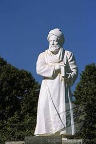
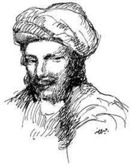
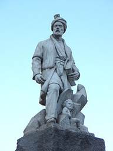
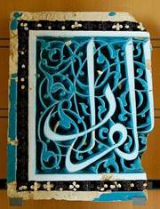

V. CHỦ NGHĨA THẦN BÍ VÀ TÀ THUYẾT
Theo truyền thuyết, trái với với hầu hết các nhà cải cách tôn giáo, Mahomet khuyến khích và tán thưởng sự phát triển tri thức: “Kẻ nào từ biệt gia đình để tìm hiểu thêm, mở mang tri thức, là kẻ đó đi trên con đường của Thượng Đế… và mực của nhà bác học còn linh thiêng hơn máu của người tử vì “đạo”, nhưng truyền thuyết đó có vẻ như để khoe rằng người Ả Rập trọng sự giáo dục hơn các dân tộc khác. Dù sau khi người Ả Rập tiếp xúc với văn hóa Hy Lạp ở Syrie thì họ thấy phấn khởi, muốn ganh đua; và chẳng bao lâu, họ trọng nhà bác học cũng ngang với thi sĩ.
Người ta dạy trẻ trẻ ngay từ khi nó mới biết nói; người ta dạy chúng ngay câu: “Con nhận rằng ngoài đấng Allah ra không có vị thần nào khác, và đức Mahomet là vị Tiên tri của Ngài”. Hồi sáu tuổi, một số trẻ nô lệ, một số con gái và hầu hết các con trai không nô lệ, trừ con nhà giàu (chúng có gia sư) vô một trường sơ học thường là thánh thất, đôi khi ở giữa trời, bên một phong ten công cộng. Thầy giáo đa số không lấy tiền học hoặc lấy thì rất nhẹ, ai cũng có thể trả được, vào khoảng mười lăm quan tiền Pháp mỗi trò[141]; những phí tổn khác do các nhà từ thiện đóng góp.
Sự dạy dỗ thực giản dị: những kinh cầu nguyện cần thiết, tập đọc đủ để đọc kinh Coran, khỏi dạy các môn khác vì kinh Coran vừa là sách thần học, vừa là sử kí, luân lí, luật pháp. Tập viết và tập làm toán thì để lên những trường cao cấp, có lẽ vì ở phương Đông, viết chữ là một nghệ thuật cần phải học riêng; với lại người Hồi giáo nghĩ rằng ai thực cần giữ sổ sách, văn thư thì đã có hạng kí lục giúp đỡ. Mỗi ngày người ta học thuộc lòng một đoạn trong kinh Coran; mục đích là thuộc trọn kinh. Ai thuộc được thì gọi là hafiz (người nắm được đạo lí) và được xiển dương trước công chúng. Người nào lại học viết, bắn cung và lội nữa, thì gọi là al-kamil (hoàn toàn). Phương pháp dạy là bắt buộc thuộc lòng, luyện kí tính, kỉ luật nghiêm, dùng roi; thầy giáo thường dùng một cành kè quất vào gan bàn chân trẻ. Vua Haroun bảo vị sư phó dạy hoàng tử Amin: “Đừng nghiêm quá mà khả năng của nó không phát ra được, mà cũng đừng dễ dãi tới mức… làm cho nó hoá ra biếng nhác. Rán nhỏ nhẹ ngọt ngào sửa tính cho nó, nhưng nếu như vậy không có kết quả thì đừng nghiêm khắc, roi vọt”.
Nền tiểu học nhằm luyện tư cách cho trẻ, nền trung học chú trọng về trí học. Ngồi xổm, lưng dựa vào một cái cột hay một bức tường trong thánh thất, các giáo sư giải thích kinh Coran và các hadith (truyền thuyết), dạy thần học và luật học. Không biết rõ từ hồi nào, các trường trung học không có thể thức gì ấy được quốc gia định, trợ cấp, thành những madrasa (học viện). Ngoài môn thần học căn bản ra, người ta dạy thêm các môn ngữ pháp, ngôn ngữ học, tu từ, văn học, luân lí, toán, thiên văn. Người ta dạy kĩ môn ngữ pháp, vì người ta cho tiếng Ả Rập là một ngôn ngữ hoàn hảo nhất, nói đúng tiếng ấy là dấu hiệu tỏ rằng mình thuộc hạng thượng lưu. Các học viện ấy không thu học phí và có khi chính quyền và các nhà hảo tâm chẳng những trả lương cho giáo sư mà còn gánh vác các phí tổn của sinh viên nữa. Sách học – trừ kinh Coran – không quan trọng bằng ông thầy; trò học thầy hơn là học trong sách; và có những sinh viên đi khắp đế quốc để tìm một ông thầy nổi danh. Sinh viên nào muốn được trọng vọng ở quê hương thì phải lại học các nhà đại thông thái ở La Mecque, Bagdad, Damas và Le Caire. Văn học có tính cách quốc tế như vậy là nhờ trong toàn thể đế quốc, tuy có nhiều dân tộc nhưng ngôn ngữ Ả Rập vẫn là ngôn ngữ của văn học, khoa học; tiếng La Tinh cũng không có được một phạm vi rộng hơn. Khi một du khách vô một thị trấn Hồi giáo thì biết chắc rằng gần như bất kì giờ nào, mình cũng có thể lại thánh thất chính để nghe một nhà bác học diễn giảng. Nhiều khi, một sinh viên ở một nơi khác tới, chẳng những được miễn học phí mà trong một thời gian còn được ăn ở khỏi trả tiền nữa. Không có bằng cấp, chức tước gì cả; sinh viên chỉ được thầy phát cho một chứng chỉ thừa nhận thế thôi. Vinh dự cuối cùng là học được adab, tức những cử chỉ, ngôn ngữ, giám thức thanh nhã và những kiến thức bất vị lợi của hạng thượng lưu, quí phái.
Khi người Hồi giáo chiếm Samarcande[142] (712), họ học được của người Trung Hoa cách giã cây gai và vài thứ cây có thớ nhỏ nữa thành một thứ bột nhồi tráng ra thành những tờ mỏng rồi phơi cho ráo. Ở Cận Đông, người ta dùng những tờ giấy ấy để viết, thay da cừu, da bò non và loại giấy papyrus[143] của người Ai Cập và gọi sản phẩm mới đó là papynos. Xưởng đầu tiên chế tạo giấy do al-Fadl, con vua Haroun thành lập ở Bagdad năm 794. Phương pháp ấy do người Ả Rập truyền qua Sicile, Y Pha Nho, rồi từ Y Pha Nho qua Ý, Pháp. Người ta thấy giấy được dùng ở Trung Hoa từ năm 105 sau T.L., ở La Mecque từ năm 707[144], Ai Cập năm 800, Y Pha Nho năm 959, Đức năm 1288, Anh năm 1390. Nhờ phát minh đó mà dễ đóng thành sách. Yakoubi bảo rằng thời ông (891) Bagdad có trên một trăm tiệm sách. Tiệm nào cũng là trung tâm chép sách, và nơi các văn nhân hội họp. Nhiều sinh viên sống nhờ việc chép các văn bản chép tay và gửi bán ở tiệm sách. Ở thế kỉ thứ X mà đã có những kẻ chạy chọt xin thủ bút, và những kẻ sưu tầm sách chịu trả đắt những bản chép tay hiếm có. Tác giả không được hưởng một chút tác quyền nào cả; họ sống nhờ những công việc khác hoặc nhờ sự trợ cấp của các ông hoàng, các đại phú gia; văn thơ, nghệ thuật đều sáng tác để thoả mãn thị hiếu của bọn quyền quí hoặc giàu có.
Hầu hết các thánh thất đều có thư viện, vài thị trấn có những thư viện công cộng rất lớn, ai vô cũng được. Khoảng 950, Mossoul có một thư viện do những người hảo tâm thành lập, sinh viên được vô đọc sách, lại được cung cấp giấy cho nữa. Phải có mười thư mục lớn mới ghi hết được tên sách của thư viện Sayy. Thư viện Bassora trả lương cho các học giả lại đó nghiên cứu. Nhà địa lí học Yakyl vô các thư viện ở Merv và Khwarizm nghiên cứu ba năm, kiếm tài liệu soạn bộ từ điển địa lí. Khi Bagdad bị Mông Cổ tàn phá thị trấn ấy có tới 36 thư viện công cộng. Thư viện tư thì nhiều vô kể; phú gia nào cũng đua nhau gây một tủ sách lớn. Một y sĩ từ chối một chức lớn ở triều đình vua Noukhara vì muốn chở theo thư viện của ông, phải dùng tới bảy trăm con lạc đà. Al-Wakidi, khi chết để lại sáu trăm hộp đầy sách, hộp nào cũng phải hai người khiêng mới nổi. “Những ông hoàng như Sahib ibn Abbas ở thế kỉ thứ X có thể có một số sách nhiều bằng sách trong tất cả các thư viện châu Âu gom lại”. Trong mấy thế kỉ VIII, IX, X và XI, khắp thế giới không đâu người ta mê sách như vậy, trừ Trung Hoa ở triều đại Đường Minh Hoàng. Văn học Hồi giáo hồi đó đạt tới tuyệt đỉnh. Các học giả nhiều như cột trong hàng ngàn thánh thất từ Cordou tới Samarcande, lời diễn giảng hùng hồn của họ làm run chuyển cả các tu viện; bọn sử gia, địa lí gia, thần học gia đi nườm nượp đầy đường trong đế quốc để học hỏi, nghiên cứu; triều đình của hàng trăm vua chúa vang lên những tiếng ngâm thơ và lời tranh luận triết học; không một nhà triệu phú nào mà lại mặt dày mày dạn tới nỗi không bảo trợ văn thơ hoặc nghệ thuật. Người Ả Rập trí óc mẫn tiệp, hăng hái hấp thụ văn hoá cổ của các nước bị họ xâm chiếm; và họ rất khoan dung cho nên trong số các thi sĩ, bác học gia, triết gia làm cho tiếng Ả Rập thành ngôn ngữ tinh thông nhất, phong phú, đẹp đẽ nhất thế giới, chỉ có một số ít nhà thuộc huyết thống Ả Rập.
Các học giả Hồi giáo thời đó nghiên cứu ngữ pháp để cải thiện ngôn ngữ Ả Rập, cho nó hợp với luân lí, có những cách phô diễn mẫu mực làm căn bản cho một nền văn học tuyệt cao; họ soạn tự điển để dụng ngữ thêm tinh xác, phong phú, soạn các bộ thi tuyển, văn tuyển, bách khoa toàn thư và các sách toát yếu để bảo tồn được nhiều cái quí; họ lại hiệu đính, phê bình văn học và lịch sử. Chúng ta không thể kể hết tên của họ được, nhưng mang ơn và ngưỡng mộ sự nghiệp của họ.
Các học giả chúng ta nhớ tới trước tiên là các sử gia, vì không có họ thì chúng ta không biết chút gì về văn minh Ả Rập, cũng như trước thời Champolion[145], người ta không biết chút gì về văn minh cổ Ai Cập.
Muhammad ibn Ishak (chết năm 767) viết cuốn “Tiểu sử Mahomet”, một tác phẩm mẫu mực; cuốn đó, Ibn Hisham (763) viết lại, tăng bổ, thành tác phẩm cổ nhất, quan trọng nhất – trừ kinh Coran – bằng văn xuôi Ả Rập, còn lưu truyền tới nay. Nhiều học giả tò mò, khảo cứu không biết mệt, soạn các bộ tự điển về đời sống các thánh, triết gia, tổng lí đại thần, luật gia, y sĩ, quan lớn, quan nhỏ, người viết chữ tốt, học giả và chép cả tình sử nữa. Ibn-Kutaiba (828-889) là một trong nhiều người Hồi giáo thử viết một bộ lịch sử thế giới; trái với hầu hết các sử gia, ông can đảm đặt tôn giáo của ông vào địa vị khiêm tốn, địa vị của bất kì dân tộc nào, tôn giáo nào so với thời gian vô cùng. Muhammad Nadim xuất bản năm 987 một “Mục lục các khoa học”, tức là một thư tịch ghi tất cả các sách bằng tiếng Ả Rập, nguyên tác hoặc dịch, trong mọi ngành tri thức, với một tiểu truyện thành lời phê bình về mỗi tác giả, chép những đức và cả những tạt của mỗi nhà; chúng ta thấy văn học Hồi giáo thời ấy phong phú ra sao, nếu chúng ta nhớ rằng ông kể tên cả ngàn tác phẩm, mà hiện nay không còn lưu lại được một tác phẩm nào.
Đại sử gia của Hồi giáo là Abu Jafar Muhamad al-Tabari (838-923). Như đa số các văn sĩ Hồi giáo, ông gốc Ba Tư, sinh ở Tabarstan, phía Nam biển Caspienne. Sau nhiều năm sống một đời sinh viên nghèo, nay đây mai đó, khi ở Ả Rập, lúc ở Syrie, Ai Cập, ông định cư ở Bagdad, chuyên trứ thuật về luật học. Ông bỏ ra bốn chục năm soạn một bộ kí sự thế giới vĩ đại: “Sử các Sứ đồ và các vua chúa” từ thời khai thiên lập địa tới năm 913. Hiện nay còn giữ được mười lăm cuốn lớn; người ta bảo rằng nguyên bản dài gắp mười như vậy. Như Bossuet[146], al-Tabari thấy biến cố nào cũng do Thượng Đế an bài cả, và mấy chương đầu đầy những lời bậy bạ: “Thượng Đế sinh ra loài người để thử thách họ”. Thượng Đế từ trên trời thả một ngôi nhà bằng Hồng ngọc xuống cho Adam (thuỷ tổ loài người), nhưng Adam có tội, Ngài lấy lại ngôi nhà. Al-Tabari theo Thánh kinh để viết lại lịch sử Do Thái; ông nhận rằng thánh mẫu Marie còn trinh khi sinh chúa Kitô (bà mang thai vì thánh Gabriel thổi vào tay áo bà); ông chép tới khi chúa Kitô là hết phần thứ nhất. Phần thứ nhì vững vàng hơn, kể lại lịch sử Ba Tư dưới triều đại Sassanide bằng bút pháp gọn, đôi khi linh động. Ông dùng phương pháp niên biểu, chép biến cố từng năm một, và đôi khi dùng một hay nhiều loạt truyền thuyết để đi ngược lên tới một người để trông hoặc nghe thấy biến cố. Phương pháp đó quí ở điểm tìm tòi, ghi chép cẩn thận xuất xứ, nhưng ông không rán kết hợp nhiều truyền thuyết để thành một truyện có mạch lạc nhất trí, thành thử bộ sử của ông chỉ là một núi tài liệu chứ không phải là một tác phẩm nghệ thuật.
Al-Masudi, người kế nghiệp nổi danh nhất của al-Tabari, ông là sử gia lớn nhất từ trước tới thời mình. Abu Hasan Ali al-Masudi, gốc Ả Rập ở Bagdad, du lịch khắp nơi: Syrie, Palestine, Ả Rập, Zanzibar[147], Ba Tư, Trung Á, Ấn Độ, Tích Lan và tới cả biển Trung Hoa nữa. Ông gom tất cả những điều ông lượm được vào một bộ Bách khoa toàn thư ba mươi quyển, mà ngay những học giả thích tìm hiểu đế quốc Hồi giáo nhất cũng cho là dài quá; ông cho ra một bộ toát yếu, nhưng vẫn còn vĩ đại; sau cùng, năm 947, có lẽ hiểu rằng mình có nhiều thì giờ để viết chứ độc giả có ít thì giờ để đọc, nên ông rút lại thành bộ hiện nay chúng ta được biết, và đặt cho nó một nhan đề hơi ngông: “Đồng cỏ vàng và mỏ ngọc”[148].
Quả thực môn gì ông cũng tiêu hoá được, từ địa lí, sinh vật học, sử kí tới phong tục, tôn giáo, khoa học, triết học, văn học của mọi nước, từ Trung Hoa tới Pháp. Ông vừa là Pline, vừa là Hérodote[149] của đế quốc Hồi giáo. Văn ông không cô động tới khô khan, trái lại lưu loát, dễ đọc, thỉnh thoảng kể thêm một chuyện vui. Về tôn giáo, ông hơi có tinh thần hoài nghi, nhưng không bắt độc giả theo ý kiến của mình. Năm cuối cùng trong đời ông, ông tóm tắt ý nghĩ của ông về khoa học, lịch sử và triết học trong cuốn “Tự ngôn” chủ trương rằng có sự tiến hoá “từ khoáng vật tới loài người”. Có lẽ ý kiến đó làm cho hạng bảo thủ ở Bagdad ghét ông; ông bắt buộc phải, như ông nói, “lìa nơi tôi sinh trưởng”. Ông lại ở Le Caire, phàn nàn vì phải xa cố hương. Ông bảo: “Thời đại chúng ta có đặc điểm là tìm cách chia rẽ hết thảy… Nhờ Thượng Đế sinh ra tình yêu gia đình, quê hương mà dân tộc mới cường thịnh; quyến luyến với nơi chôn nhau cắt rốn của mình là tỏ rằng mình lương thiện; không thích xa ngôi nhà và quê hương của tổ tiên là tỏ rằng mình thuộc dòng dõi cao quí”. Sau mười năm tha hương, ông mất ở Le Caire năm 956.
Các sử gia đó có một mục đích và hứng thú chung; họ khéo xen lẫn địa lí với sử kí, và không có gì liên quan tới con người mà họ không để ý tới; họ hơn hẳn các sử gia Kitô giáo đồng thời. Nhưng họ vẫn kể lể quá dài dòng về chính trị, chiến tranh, ham tật tu từ lải nhải, rất ít khi xét những nguyên nhân kinh tế, xã hội và tâm lí của các biến cố; chúng ta tiếc rằng những tác phẩm tổng hợp, chỉ là một mớ tài liệu rời rạc về các dân tộc, các nhân vật, các việc xảy ra. Rất ít khi họ chịu nghiên cứu kĩ lưỡng xuất xứ, quá trọng và quá tin những truyền thuyết móc nối vào nhau như mắt một sợi dây xích mà không ngờ rằng mỗi mắt có thể lầm lẫn hoặc nguỵ tạo, thành thử đôi khi họ kể những chuyện ngây ngô về điềm lành, điềm xấu, phép mầu và huyền thoại. Giống như nhiều sử gia Kitô giáo (tất cả trừ Gibbon) có thể viết về thời Trung cổ mà coi văn minh Hồi giáo chỉ là một chương ngắn phụ thuộc vào lịch sử Thập tự chiến; nhiều sử gia Hồi giáo cũng mắc tật thiên kiến đó, cho lịch sử thế giới trước khi có Hồi giáo chỉ là một thời đại lâu dài chuẩn bị cho Mahomet ra đời[150]. Nhưng một người có tinh thần phương Tây làm sao có thể phê bình tinh thần phương Đông một cách công bình được? Trong một bản dịch, cái đẹp của ngôn ngữ Ả Rập bị làm khô héo hết như một bông hoa lìa cành; và những truyện trong tác phẩm của sử gia Hồi giáo làm cho người Ả Rập mê; còn đối với độc giả phương Tây có thể là khô khan, vô ích, khi họ không hiểu rằng Đông Tây phải hiểu lẫn nhau, tuỳ thuộc lẫn nhau về kinh tế.
Trong mấy thế kỉ cường thịnh của Hồi giáo, các người Hồi giáo đã gắng sức giúp cho Đông Tây hiểu lẫn nhau. Các calife nhận thấy sự lạc hậu về khoa học, triết học của dân tộc Ả Rập, và sự phong phú của văn học Hy Lạp còn được truyền lại Syrie. Triều đại Omeyyade sáng suốt để cho các học viện Kitô giáo, Ba Tư… tự do hoạt động ở Alexandrie, Beyrouth, Antioche, Harran, Nisbis và Jud-i-Shapur; các trường đó còn giữ các tác phẩm cổ điển về khoa học, triết học Hy Lạp, thường là nhờ các bản dịch ra tiếng Syriaque[151].
Những người Hồi giáo học tiếng Hy Lạp hoặc tiếng Syriaque để ý tới các tác phẩm ấy và chẳng bao lâu có những người theo Cảnh giáo và những người Do Thái đem dịch ra tiếng Ả Rập. Các triều đại Omeyyade và Abbasside khuyến khích sự vay mượn rất có lợi đó. Al-Mansur, al-Mamoun và al-Mutawakkil phái sứ giả tới Constantinople và các thị trấn Hy Lạp khác – có khi tới cả những kẻ thù truyền kiếp của họ là các hoàng đế Hy Lạp – xin các sách Hy Lạp, đặc biệt là các bộ khoa học và toán học; do đó mà bộ “Nguyên lý” của Euclide mới truyền vô Ả Rập. Năm 830, al-Mamoun bỏ ra hai trăm ngàn dinar (950.000 Mĩ kim) để cất “Toà Minh triết” (Bayt al-Hikmah) gồm một viện khoa học, một đài thiên văn và một thư viện công cộng; toà tuyển dụng một đoàn phiên dịch viên do quốc khố đài thọ. Ibn Khaldoun cho rằng nhờ công việc của cơ quan đó mà văn nghệ Hồi giáo mới tái sinh, làm chấn động thế giới; cuộc cuộc tái sinh này giống cuộc Phục hưng văn nghệ Ý cả về nguyên nhân (thương mại khuếch trương, phát kiến lại được Hy Lạp), lẫn kết quả (khoa học, văn nghệ thịnh khai).
Từ 750 đến 900, họ tiếp tục dịch từ tiếng Syriaque, Hy Lạp, Pehlvi[152] và tiếng Phạn qua tiếng Ả Rập. Đứng đầu cơ quan dịch thuật của toà Minh triết là một y sĩ theo Cảnh giáo, tên là Hunain ibn Ashak, tức Jean, con của Isaac (809-873). Ông ta bảo chính ông ta đã dịch trăm cuốn của thầy trò Galien ra tiếng Syriaque, và ba mươi chín cuốn ra tiếng Ả Rập, nhờ vậy mà vài tác phẩm quan trọng của Galien còn lưu lại được, khỏi bị huỷ diệt. Ngoài ra, ông còn dịch nhiều bộ của Aristote, Platon, Dioscoride, Ptolémée và kinh Cựu ước nữa. Quốc khố lâm nguy vì al-Mamoun trả công quá hậu cho Hunain: đem cân dịch phẩm, nặng bao nhiêu thì trả bấy nhiêu vàng. Al-Mutawakkil phong Hunain làm ngự y, nhưng sau bỏ tù ông ta một năm vì ông – mặt dù bị doạ tử hình – không chịu chế một thứ thuốc độc để hại một kẻ thù của nhà vua. Con trai ông, Ishak ibn Hunain giúp ông trong việc dịch thuật và dịch ra tiếng Ả Rập các cuốn “Siêu hình học”, “Luận về linh hồn”, “Khảo cứu về sự sinh thực và sự suy bại của các loài vật” của Aristote, nhất là tập thuyết minh của Alexandre d’Aphrodisias, sau này có ảnh hưởng lớn tới triết học Hồi giáo.
Khoảng 850, hầu hết các tác phẩm cổ điển Hy Lạp về toán, thiên văn học, y học đều được dịch hết rồi (…). Có một điều là người Hồi giáo rất mê thơ và lịch sử mà lại không tìm hiểu thơ, kịch và thuật viết sử của Hy Lạp, về những môn đó, họ học Ba Tư chứ không học Hy Lạp (…). Các tác phẩm của Platon và Aristote được dịch hầu hết, mặc dầu nhiều chỗ dịch sai; nhưng vì các học giả Hồi giáo muốn dung hoà triết lí Hy Lạp với kinh Coran cho nên không theo nguyên tắc của hai nhà đó mà theo lối chú giải của phái Tân Platon[153]. Chỉ những sách về lôgích và khoa học của Aristote là được họ theo đúng.
Khoa học và triết học được lưu truyền một cách liên tục từ Ai Cập, Ấn Độ, Babylone qua Hy Lạp và Byzance, từ hai xứ này lại truyền qua đế quốc Hồi giáo phương Đông và Y Pha Nho, từ Y Pha Nho lại qua châu Âu và Bắc Mĩ, thành một sợi chỉ rực rỡ trong cuộn chỉ lịch sử. Khoa học Hy Lạp mặc dầu đã suy từ lâu, nhưng vẫn còn sống sót ở Syrie khi người Hồi giáo tới đó; ngay từ buổi đầu thời kì xâm lăng, Severus Sebokht, tu viện trưởng ở miền thượng lưu sông Euphrate, vẫn viết về thiên văn bằng tiếng Hy Lạp; ông là người ngoại quốc đầu tiên nói tới những con số Ấn Độ[154] (662). Khoa học của Ả Rập chịu ảnh hưởng của Hy Lạp trước hết, rồi tới ảnh hưởng của Ấn Độ. Năm 773, al-Mansur ra lệnh dịch bộ thiên văn học Siddhantas Ấn Độ viết từ năm 425 trước T.L.; có thể do công việc dịch đó mà những con số Ả Rập và con số “không” (0) được truyền từ Ấn qua Ả Rập. Năm 813, al-Khwarizmi dùng con số Ấn Độ trong môn thiên văn; vào khoảng 825, ông cho in một cuốn sách bằng tiếng La tinh, nhan đề là Algoritmi de numero Indorum (nghĩa là: Al-Khwarizmi viết về các con số Ấn Độ); do đó mà sau này tiếng algorithme trỏ cả hệ thống số học dùng cách đếm thập phân. Năm 976, Muhammad ibn Ahmad trong cuốn “Chìa khoá khoa học”, bảo khi làm tính, nếu không có một số nào xuất hiện ở hàng chục, thì phải dùng một vòng tròn nhỏ thay thế vào để “giữ hàng”. Người Hồi giáo gọi vòng tròn ấy là sifr, nghĩa là trống không, do đó mới có tiếng Pháp “chiffre”[155] (con số); các học giả La tinh đổi sifr thành zephyrum, rồi người Ý gọi tắt là “zero” (số không).
Môn đại số đã có từ Diophante, học giả Hy Lạp ở thế kỉ thứ III; người Ả Rập phát triển thêm nhiều, và tiếng “Algèbre” (đại số học) của Pháp cũng là gốc Ả Rập. Môn ấy có lẽ là môn toán cao nhất thời Trung cổ, mà nhà đại số học nổi danh nhất là Muhammad ibn Musa (780-855), tức al-Khwarizmi; Khwarizm[156] là nơi chôn nhau cắt rốn của ông (nay là Khiva), ở phía Đông biển Caspienne. Ông góp công đắc lực vào năm ngành khoa học, nghiên cứu các các con số Ấn Độ; lập các bảng thiên văn; sau này, khi các nhà bác học Hồi giáo ở Y Pha Nho sửa lại, được tất cả các nhà thiên văn học từ Cordoue tới Trường An (Trung Hoa), dùng làm mẫu mực trong mấy thế kỉ; lập những bảng lượng giáo cổ nhất của nhân loại; hợp tác với sáu mươi chín nhà bác học khác soạn một bộ tự điển địa lí cho al-Mamoun; và trong cuốn “Tính tích phân và phương trình”, chỉ những cách giải phương trình bậc hai bằng phân tích và hình học. Tác phẩm này không còn bản tiếng Ả Rập nhưng đã được Gérard de Crémone ở thế kỉ XII dịch ra và các đại học Âu châu làm sách căn bản mãi cho tới thế kỉ XVIII; do đó tiếng Al-jabr (có nghĩa là phục hồi nguyên trạng, hoàn thành) mới truyền qua châu Âu thành tiếng algèbre (đại số học) của Pháp. Thabit ibn Kura (826-901) ngoài các công trình dịch thuật quan trọng, còn nổi tiếng về thiên văn, y học và thành nhà hình học lớn nhất Hồi giáo. Abu Abdallah al-Battani (850-929), ở Rakka – người châu Âu gọi ông là Albategni – làm cho môn lượng giác tiến hơn thời Hipparque và Ptolémée nhiều; những tỉ trọng lượng giác[157] hiện nay chúng ta dùng là do ông đặt ra.
Vua al-Mamoun dùng một nhóm thiên văn gia để quan sát tinh tú, lập các bản thiên văn, kiểm soát lại các phát kiến của Ptolémée và nghiên cứu các vết trên mặt trời. Tin chắc rằng trái đất tròn, họ cùng một lúc lấy vị trí của mặt trời ở Palmyre và ở cánh đồng Sinfar để đo xem mức độ địa cầu dài bao nhiêu và họ được con số 561,5 dặm[158] (mille), chỉ dài hơn con số chúng ta tính ngày nay có nửa dặm; và họ tính ra được vòng tròn trái đất là ba mươi lăm ngàn cây số. Các nhà thiên văn học đó áp dụng những qui tắc hoàn toàn khoa học; cái gì mà thí nghiệm hoàn toàn không thấy đúng thì họ không chấp nhận. Một nhà tên là Abu I-Farghani, ở Transoxiane viết (vào khoảng 860) một thiên khảo cứu về thiên văn được cả châu Âu lẫn Tây Á dùng trong bảy thế kỉ. Al-Battani còn nổi danh hơn nữa, ông quan sát trắc nghiệm về thiên văn vừa rộng vừa chính xác, so với kết quả ngày nay chỉ sai có một chút (…)
Vẽ bản đồ trái đất còn quan trọng hơn bản đồ vòm trời, vì người Hồi giáo sống nhờ trồng trọt và thương mại. Suleiman al-Tajir (có nghĩa là thương gia Suleiman), vào khoảng 840 đã chở hàng hoá qua bán ở Viễn Đông; một tác giả khuyết danh (851) chép cuộc lữ hành của Suleiman; thiên kí sự về Trung Hoa cổ nhất bằng tiếng Ả Rập đó xuất hiện 425 năm trước cuốn “Lữ hành” của Marco Polo. Cũng trong thế kỉ thứ IX đó, Ibn Khoradadhbeh viết một cuốn tả xứ Ấn Độ, Tích Lan và Trung Hoa, có vẻ như chính ông đã tới những xứ đó để quan sát; còn Ibn Haukal thì tả Ấn Độ và châu Phi. Ahmad al-Yakoubi, ở Arménie và Khorasan, viết năm 891 một cuốn về “Các xứ”, tả đúng các tỉnh, thị trấn Hồi giáo và nước ngoài nữa. Muhammad al-Mukaddasi thăm tất cả các xứ trong đế quốc Hồi giáo, trừ Y Pha Nho, trải qua nhiều nỗi gian truân và năm 985 viết cuốn “Địa chí Đế quốc Hồi giáo”, tác phẩm địa lí vĩ đại nhất của Ả Rập trước khi có bộ “Ấn Độ” của al-Biruni.
Abu al-Rayhan Muhammad ibn Ahmad al-Biruni (973-1048) là học giả tiêu biểu của Hồi giáo. Ông vừa là triết gia, sử gia, địa lí gia, ngôn ngữ gia, toán gia, thiên văn gia, vật lí gia, vừa là thi sĩ mà đi du lịch rất nhiều; trong tất cả các khu vực đó ông đều lưu lại những tác phẩm quan trọng, độc đáo; ít nhất cũng phải coi ông là Leibnitz, gần như là Léonard de Vinci của Hồi giáo.
Cũng như al-Khwarizni, ông sinh gần thị trấn Khiva ngày nay, và cũng làm cho miền đó nổi tiếng trong thế kỉ mà khoa học thời Trung cổ đạt tới đỉnh đó. Các vua chúa ở Khwarizm và Tabaristan nhận định được thiên tài của ông, vời ông lại triều đình. Nghe tiếng ở Khwarizm có một nhóm thi sĩ và triết gia, Mahmud ở Ghazni[159] xin vua Khwarizm phái al-Biruni, al-Sina và các nhà bác học khác lại triều đình mình, vua Khwarizm phải tuân lệnh (1018), và al-Biruni được sống vinh quang, yên ổn nghiên cứu bên cạnh Mahmud, ông vua hiếu chiến đã xâm lăng. Có lẽ al-Biruni đã theo đoàn tuỳ tùng của Mahmud và vô Ấn Độ; nhưng dù sao thì ông cũng ở đó nhiều năm, học ngôn ngữ và cổ sử của Ấn. Trở về triều đình Mahmud, ông thành sủng thần của ông vua chuyên chế lạ lùng ấy. Một người khách ở phía Bắc châu Á bảo đã thấy một miền mà trong mấy tháng liền, mặt trời không lúc nào lặn, ông không tin, cho là dám nói láo gạt mình, tính bỏ tù người ấy; al-Biruni giảng hiện tượng ấy, nhà vua nghe ra, thoả mãn, và người khách kia thở phào, nhẹ nhõm. Masoud, con trai của Mahmud, cũng là một học giả tài tử, tặng al-Biruni rất nhiều tiền bạc, phẩm vật, al-Biruni thường trả lại quốc khố, bảo không cần chi tới nhiều như vậy.
Tác phẩm quan trọng đầu tiên của ông (vào khoảng 1.000), nhan đề Athrul-Bakiya[160] (Di tích quá khứ) có tính cách cực kì kĩ thuật, khảo về các lịch, lễ tôn giáo của Ba Tư, Syrie, Hy Lạp, Kitô, Do Thái, Ả Rập. Ông có tinh thần vô tư dị thường, tránh được hết những ác cảm về tôn giáo. Ông theo phái Shiite của Hồi giáo và có khuynh hướng rất kín đáo rằng trí óc của loài người không thể biết được cái tuyệt đối. Nhưng ông vẫn giữ được một chút tinh thần ái quốc (ông là người Ba Tư), trách người Ả Rập đã tiêu diệt nền văn minh rất cao dưới triều đại Sassanide. Ngoài ra, ông có một thái độ của một học giả khách quan, thận trọng, thường tự nhận có nhiều điều mình không biết, và hứa sẽ tiếp tục nghiên cứu tới khi thấy được chân lí. Trong bài tựa cuốn Di tích quá khứ, ông nghĩ như Francis Bacon rằng “chúng ta phải trừ những nguyên nhân làm cho con người hoá mù quán, không nhìn thấy sự thực, tức những cổ tục, tinh thần phe đảng, óc đối kháng, lòng đam mê, thích gây ảnh hưởng”. Mahmud, người trọng đãi ông, ra công tàn phá Ấn Độ, còn ông lại bỏ ra nhiều năm nghiên cứu các dân tộc, ngôn ngữ, tín ngưỡng, văn hóa, tập cấp trong xã hội Ấn Độ. Năm 1030, ông cho ra tác phẩm lớn của ông: Tarikh al-Hind (Lịch sử Ấn Độ). Ngay từ đầu, ông đã phân biệt điều nào ông chỉ nghe nói với điều nào ông đã trông thấy tận mắt, ông lại chia ra nhiều hạng sử gia “nói láo”. Ông viết rất ít về lịch sử chính trị của Ấn, nhưng bỏ ra bốn mươi hai chương để chép thiên văn học Ấn và mười một chương chép tôn giáo Ấn. Ông mê kinh Bhagavad Gita của Ấn, thấy phần thần bí trong triết thuyết Védanta, Soufi[161] của Ấn giống phần thần bí trong triết thuyết Tân Pythagore và Tân Platon của Hy Lạp, và tỏ ý thích Hy Lạp hơn, bảo: “Ấn không sản xuất được một Socrate, không có một phương pháp luận lí nào để trục xuất sự tưởng tượng ra khỏi khu vực khoa học”. Mặc dầu vậy, ông cũng dịch nhiều tác phẩm viết bằng tiếng Phạn[162] ra tiếng Ả Rập và như để trả món nợ tinh thần đó, ông dịch tác phẩm của Euclide, Ptolémée ra tiếng Phạn.
Ông nghiên cứu hầu hết các khoa học, viết một cuốn có giá trị nhất thời Trung cổ về các con số Ấn Độ, lập những bảng thiên văn cho vua Masoud… Ông chấp nhận không chút do dự rằng trái đất tròn, bảo “vật gì cũng bị hút về phía trung tâm trái đất”, và các luận cứ về thiên văn giảng bằng hai cách: hoặc trái đất mỗi ngày quay chung quanh một vòng, và mỗi năm quay chung quanh mặt trời một vòng; hoặc ngược lại, mặt trời quay chung quanh nhật trục một vòng, và mỗi năm quay quanh trái đất một vòng, cách nào cũng được cả. Ông cho rằng thung lũng Indus thời xưa có thể là đáy biển. Ông viết một bộ lớn nghiên cứu rất nhiều thạch loại và kim loại về phương diện tự nhiên, thương mại và y học. Ông tính được trọng lượng riêng[163] của mười tám bảo vật nặng hay nhẹ tuỳ theo khối nước nó dời đi nhiều hay ít. Ông tìm được cách khỏi làm một loạt dài tính cộng mà cũng biết được hễ tăng gắp đôi hoài một số thì sẽ được bao nhiêu. Ông chứng minh được nhiều định lí mang tên ông. Ông soạn một bộ toàn thư về thiên văn học, một bộ địa lí, một sách toát yếu về khoa thiên văn, khoa chiêm tinh và môn toán. Ông cũng dùng luật thuỷ tĩnh học về các bình thông nhau để giảng các giếng phun và các suối tự nhiên. Ông viết các bộ sử về đời Mahmud, về các xứ Sukukitigin và Khwarizm[164]. Các sử gia phương Tây gọi ông là “siheik”[165], tức tôn ông là bực thầy các học giả. Những tác phẩm của ông cùng với những tác phẩm của Ibn Sina, Ibn al-Haitham và Ferdousi đồng thời với ông, làm cho văn hóa Hồi giáo và tư tưởng Trung cổ đạt tới mức cao nhất ở cuối thế kỉ thứ X và đầu thế kỉ XI.
Gần như nhờ các nhà bác học Hồi giáo mà môn hoá học thành một khoa học; vì theo chỗ chúng tôi biết thì trong khu vực đó, người Hy Lạp mới chỉ thí nghiệm về kĩ nghệ và đưa ra những giả thuyết mơ hồ thôi, chính người Hồi giáo mới nhận xét một cách chính xác, thí nghiệm rồi kiểm soát, đo lường kĩ lưỡng. Họ chế tạo ra “nồi cất” mà họ gọi là Al-amik[166], (gốc tiếng alambic của Pháp), phân tích vô số chất, viết sách về thạch loại, kim loại, phân biệt các alcali (ba dờ) và các acide (acít), nghiên cứu và chế tạo mấy trăm thứ thuốc[167]. Khoa luyện đan (alchemie) mà người Hồi giáo học được của Ai Cập giúp cho hoá học phát triển nhờ cả ngàn phát minh ngẫu nhiên và cũng nhờ phương pháp luyện đan của Hồi giáo có tính cách khoa học hơn hết thảy các phương pháp khác ở thời Trung cổ. Thật ra tất cả các nhà bác học Hồi giáo đều tin rằng bất kì kim loại nào phân tích tới cùng, cũng đều có những nguyên tố như nhau, vậy thì có thể làm cho một loại này biến thành một loại khác được. Họ tìm cách biến đổi những kim loại “căn bản” như sắt, đồng, chì, hoặc thiếc thành bạc hoặc vàng; thứ “tiên đơn” (pierre philosophate) là một chất – thời nào người ta cũng tìm kiếm mà không bao giờ thấy – nếu biết cách dùng thì có thể gây sự biến chất sự biến chất đó được (nghĩa là cho đồng, chì… biến thành vàng hay bạc). Người ta đem máu, tóc, phân và nhiều chất khác ra thử với một chất gọi là chất thử (réactive) rồi đem đốt lửa, phơi nắng, cho chúng thăng hoa (sublimer) để xem chúng có chứa chất thần diệu (al-iksir) tức thần dược đó không. Người nào có được thần dược đó thì sẽ trường sinh bất tử. Nhà luyện đan nổi tiếng nhất là Jabir ibn Hayyan (702-765), ở châu Âu quen gọi là Gebir. Vốn là con một người bán dược phẩm ở Kafa, ông làm nghề y sĩ, nhưng suốt đời cặm cụi vào việc luyện đan. Có tới trên một trăm tác phẩm mang tên ông nhưng thực ra là của tác giả vô danh, nhất là ở thế kỉ thứ X, nhiều cuốn được dịch ra tiếng La tinh và kích thích mạnh sự phát triển của môn hoá học ở châu Âu. Sau thế kỉ thứ X, môn ấy cũng như nhiều môn khác thành những ma thuật và suy đồi gần 300 năm.
Hiện nay còn rất ít tác phẩm về sinh vật học của Hồi giáo ở thời đó. Abu Hanifa al-Dinawari (815-895) viết một cuốn về “thực vật” căn cứ vào Dioscoride[168] và thêm được nhiều cây vào mục lục dược vật học. Các nhà thực vật học Hồi giáo biết dùng cách tháp cây mà sản xuất được nhiều loại trái cây mới; họ tháp cây hồng với cây hạnh mà có được những hoa rất quí, rất đẹp. Othman Amr al-Jahif (chết năm 869) đưa ra một thuyết tiến hoá tựa thuyết của Masudi: “đời sống tiến từ khoáng vật tới thực vật, từ thực vật tới sinh vật, rồi từ sinh vật tới loài người”. Thi sĩ Jalal Ud-din, có khuynh hướng thần bí, chấp nhận thuyết đó, chỉ thêm rằng nếu sự tiến hoá đã xảy ra thực thì tới giai đoạn sau, thì loài người biến thành thiên thần, và cuối cùng sẽ thành Thượng Đế.
Trong khi chưa thành thiên thần và Thượng Đế, loài người cứ hưởng lạc thú ở đời đã, đồng thời bôi nhọ cuộc đời, tiêu những số tiền lớn để đẩy lùi thần chết. Khi người Ả Rập vô Syrie, kiến thức về y học và phương pháp trị liệu của họ còn thô sơ. Khi họ giàu có lên thì có những y sĩ tài giỏi hơn xuất hiện ở Syrie, Ba Tư, hoặc Hy Lạp, Ấn Độ tới. Vì Hồi giáo cấm họ giải phẫu hoặc mổ xẻ thây người, nên họ đành phải học trong sách của Galien[169], nghiên cứu các người bị thương.
Họ thêm vào các phương thuốc cũ được nhiều vị thuốc mới: long diên hương, long não, ba đậu, đinh hương, thuỷ ngân, mộc dược, hoa hoè; nhiều cách chế thuốc: thuốc sirô (sirop), tiếng Ả Rập là sharab, nước hoa hồng, thuốc nước (julep), tiếng Ả Rập gọi là golab, vân vân… Dược phẩm là một số hàng hoá nhập cảng nhiều vào Ý. Người Hồi lập ra những nhà thương thí và những tiệm bào chế đầu tiên, dựng trường Dược học đầu tiên ở thời Trung cổ, và viết nhiều bộ sách lớn về dược học. Y sĩ Hồi giáo rất thích dùng cách tắm để trị bệnh, nhất là cách tắm hơi để trị bệnh sốt. Phương pháp trị bệnh đậu mùa và bệnh sởi của họ cũng hoàn hảo, ngày nay khó mà cải thiện được. Trong vài trường hợp mổ xẻ, họ cho bệnh nhân thuốc mê; cây hachish (một thứ cây gai) và thứ thuốc khác làm cho bệnh nhân ngủ say. Thời đó, họ xây dựng được ba mươi bốn dưỡng đường, có lẽ là theo mẫu của y viện và dưỡng đường Ba Tư ở Jund-i-Sahapur; ở Bagdad, dưỡng đường cổ nhất do Haroun al-Rashid xây cất, tới thế kỉ thứ X, kinh đô đó có thêm năm dưỡng đường nữa; sử chép năm 918, có một viên làm giám đốc các dưỡng đường Bagdad. Dưỡng đường nổi danh nhất đế quốc là dưỡng đường Bamaristan cất ở Damas năm 706; năm 978, dưỡng đường ấy có tới hai mươi bốn y sĩ. Y khoa thường được dạy ngay trong các dưỡng đường. Muốn làm một y sĩ thì phải qua một kì thi, được bằng cấp Quốc gia; những người chế thuốc, làm nghề chỉnh hình, cạo râu và mổ xẻ đều phải theo qui chế của nhà nước và có viên chức đi thanh tra họ. Viên y sĩ đại thần Ali ibn Isa tổ chức một nhóm y sĩ đi từ thị trấn này tới thị trấn khác để trị bệnh cho dân (931); một số y sĩ ngày nào cũng vô khám đường thăm bệnh cho tội nhân; những người điên được trị một cách đặc biệt nhân từ. Nhưng trong đa số trường hợp, vệ sinh chung chưa được phát triển; tại miền Đông đế quốc, trong bốn thế kỉ, có bốn chục bệnh dịch tàn sát dân chúng.
Năm 931, ở Bagdad có tám trăm sáu chục y sĩ được phép hành nghề. Càng ở gần khu có triều đình, cung điện thì tiền tạ lễ càng cao. Jibril ibn Bakhtisha, ngự y của vua Haroun, al Manoun và dòng Barmécide, kiếm được rất nhiều tiền, gia tài lên tới tám mươi tám triệu tám trăm ngàn dirhem (7.104.000 Mĩ kim); tương truyền mỗi năm ông chích huyết cho nhà vua hai lần được thù lao trăm ngàn dirhem; ba tháng cho nhà vua uống thuốc xổ một lần cũng được trăm ngàn dirhem một năm; một thiếu nữ nô lệ vì ưu uất mà bị chứng bại, ông lột truồng chị ta giữa đám đông mà chị hết bệnh. Nhiều y sĩ kế tiếp ông ở phương Đông: Yuhanna ibn Masawayh (777-857) mổ xẻ loài khỉ để tìm hiểu cơ thể con người; Hunain ibn Ishak, nhà dịch thuật trứ danh, viết cuốn sách đầy đủ và cổ nhất về nhãn khoa, cuốn “Mười khái luận về mắt”; và Ali ibn Isa, y sĩ nhãn khoa danh tiếng nhất Hồi giáo viết cuốn “Sách chỉ dẫn cho các y sĩ nhãn khoa”; cuốn đó được dùng ở châu Âu mãi cho tới thế kỉ XVIII.
Y sĩ tài giỏi nhất là Abu Bekr Muhammad al-Razi (844-926), danh vang tới châu Âu, và người Âu gọi ông là Khazès. Như hầu hết các nhà bác học và thi sĩ đại danh đương thời, ông là người Ba Tư viết bằng tiếng Ả Rập. Sanh ở Rayy gần Téhéran, ông học hoá học, phép luyện đan và y khoa ở Bagdad, viết vào khoảng 131 cuốn mà một nửa về y khoa, hầu hết đã thất lạc. Bộ Kitab al-Hawi gồm hai mươi cuốn về một ngành trong y khoa. Bộ ấy được dịch ra tiếng La tinh, nhan đề là Liber continents[170], là tác phẩm y học được quí nhất, dùng nhiều nhất ở châu Âu trong nhiều thế kỉ; cả viện Y khoa ở Đại học Paris năm 1935 chỉ có chín bộ mà Liber continents là một. Cuốn “Bệnh đậu mùa và bệnh sởi” là một tác phẩm trứ danh về phương diện chiêm nghiệm và phân tích chứng bệnh; cũng là công trình nghiên cứu chính xác đầu tiên về các bệnh truyền nhiễm, phân biệt được bệnh đậu mùa và bệnh sởi. Bản dịch ra tiếng Anh được in đi in lại bốn chục lần từ 1498 tới 1866, như vậy chúng ta biết ảnh hưởng của nó ra sao. Tác phẩm nổi danh nhất của al-Razi là một bộ y học toát yếu gồm mười cuốn, nhan đề là Kitab al-Mansur (Sách tặng al-Mansur, một ông vua xứ Khorasan). Gérard de Crémone dịch ra tiếng La tinh, cuốn thứ chín, nhan đề là Nonus Almansoris, rất phổ biến ở châu Âu mãi tới thế kỉ XVI. Al-Razi phát minh được những phương pháp mới như dùng dùng thuỷ ngân làm thuốc ra sao, dùng ruột loài vật để khâu vết thương. Thời đó các y sĩ có thói xét nước tiểu để đoán mọi bệnh, đôi khi chẳng cần thấy mặt bệnh nhân nữa; ông bài bác, làm cho thói ấy giảm đi. Ông còn viết một số truyện ngắn có tính cách vui vẻ hay đùa cợt, như cuốn “Bàn về sự thực này: cả những lương y cũng không thể trị được mọi bệnh”, và cuốn: “Tại sao hạng y sĩ tầm thường, hạng phàm nhân không biết gì về y học và hạng phụ nữ ngu dốt lại thành công hơn các y sĩ biết nhiều hiểu rộng”. Mọi người đều coi ông là y sĩ Hồi giáo có tài nhất, người trị bệnh giỏi nhất thời Trung cổ. Ông mất năm tám mươi hai tuổi, nhà cửa thanh bạch.
Tại trường Y khoa Đại học đường Paris hiện nay có hai bức chân dung của hai y sĩ Hồi giáo: Khazès và Avicenne tức Ali al-Husein ibn Sina (980-1037) là triết gia lớn nhất và một trong những y sĩ nổi danh nhất Hồi giáo. Đọc cuốn tự truyện của ông – một tác phẩm quí trong văn học sử Ả Rập – chúng ta thấy đời một học giả, một triết nhân thời Trung cổ có thể trôi nổi ra sao. Ông là con một người đổi tiền ở Boukhara, có tinh thần khoa học mà các gia sư lại tiêm cho ông những tư tưởng huyền bí. Ibn Khallikan như mọi người phương Đông, hay phóng đại, bảo: “Mười tuổi ông đã thuộc làu kinh Coran, văn học tổng quát, và biết được ít điều về thần học, số học, đại số học”. Ông tự học y khoa, và ngay từ hồi niên thiếu, đã bắt đầu trị bệnh ăn tiền. Mười bảy tuổi ông trị hết bệnh cho vua Boukhara, tên là Nuh ibn Mansur, được phong làm ngự y và ham mê đọc các sách trong thư viện lớn của nhà vua. Vào khoảng thế kỉ thứ VI, dòng họ Samanide hết quyền hành, ông phải phục vụ al-Mamoun, vua xứ Khwarizm.
Khi Mahmud ở Ghazni cho người mời ông, al-Biruni và các hiền triết khác của triều đình Mamoun, ông không chịu đi, trốn vào sa mạc với một bạn học, Mashihi. Mashihi chết trong một cơn bão cát; còn Avicenne, sau nhiều gian truân, tới được Gurgan và phụng sự Kabus. Mahmud cho dán khắp xứ Ba Tư một bức chân dung của Avicenne, hứa thưởng người nào bắt được ông đem nộp, nhưng Kabus che chở ông. Sau Kabus bị ám sát, Avicenne được mời tới trị bệnh cho viên thống đốc ở Hamadan; ông thành công tới nỗi thành một vị đại thần. Nhưng quân đội ghen tị quyền hành của ông, bắt ông nhốt khám, cướp hết của cải của ông và đề nghị xử tử ông. Ông trốn thoát, ẩn núp trong nhà một người bán thuốc và bắt đầu viết tác phẩm làm cho ông nổi danh. Ông lẻn trốn ra khỏi Hamadan, bị con trai viên thống đốc nhốt khám mấy tháng nữa. Ở trong khám ông lại trốn được, cải trang thành một tu sĩ soufi (một giáo phái tin thuyết thần bí); từ đó ông trải không biết bao nhiêu nỗi lao đao, nguy hiểm, không sao kể hết ở đây được, sau cùng được yên thân và trọng vọng ở triều đình Ala ad-Dawla, viên thống đốc Ispahan. Một nhóm triết gia và bác học quây quần chung quanh ông, hội họp nhau thảo luận, nghiên cứu, và viên thống đốc đó cũng thích chủ toạ. Có vài truyện cho ta ngờ rằng triết gia đó cũng hiếu sắc ngang với hiếu học; nhưng lại có sách bảo ông suốt ngày đêm mải mê việc nghiên cứu, dạy học và việc nước; và Ibn Khallikan dẫn của ông vài lời khuyên khá đặc biệt này: “Mỗi ngày ăn một bữa thôi… Rán giữ gìn tinh dịch, nó là nước của đời sống, chỉ để cho nó tuôn vào tử cung thôi”. Sớm suy kiệt, ông mất hồi năm mươi bảy tuổi trong một chuyến đi lại Hamadan; nơi đó, hiện nay người ta còn sùng kính ông, chiêm bái lăng ông.

Tượng Avicienne (tức Ali al-Husein ibn Sina) tại Hamadan, Ba Tư
(http://wwwdelivery.superstock.com/WI/223/1606/PreviewComp/SuperStock_1606-34047.jpg)
Trải qua bao nhiêu gian truân như vậy mà ông còn có thì giờ trong khi làm quan hoặc nằm khám, viết khoảng một trăm cuốn sách bằng tiếng Ba Tư, Ả Rập về hầu hết mọi khu vực khoa học và triết học. Để cho tâm hồn được thăng bằng, ông làm nhiều bài thơ rất hay mà mười lăm bài lưu lại hậu thế; một trong những bài này chép lộn vào tập Rubaiyat của Omar Khayyam, một bài khác, “Linh hồn từ trên cao giáng xuống, nhập vào thể xác”, hiện nay còn được dạy ở các trường các quốc gia Hồi giáo phương Đông. Ông dịch Euclide, quan sát tinh tú, chế tạo một dụng cụ tựa chiếc du xích (vernier) của chúng ta. Ông có những công trình nghiên cứu đặc sắc về chuyển động, sức mạnh, khoảng chân không, ánh sáng, sức nóng, trọng lượng. Cuốn sách ông viết về các khoáng chất được dùng làm tác phẩm căn bản cho môn địa chất học ở châu Âu mãi cho tới thế kỉ XIII. Những nhận xét của ông về sự tạo thành các ngọn núi thực là sáng sủa, đáng làm mẫu mực:
“Có hai nguyên nhân tạo thành núi. Hoặc là do vỏ trái đất nổi lên, như khi có một cuộc động đất; hoặc do một dòng nước chảy qua một đường mới mà làm trụi các thung lũng. Các lớp đất không đồng loại: lớp mềm, lớp cứng; gió và nước làm tan rã các lớp mềm, còn các lớp cứng thì y nguyên. Phải một thời gian dài lắm mới thấy những biến đổi ấy… nhưng nước là nguyên nhân chính của hậu quả ấy, chứng cứ là chúng ta thấy trên núi những bộ xương hoá thạch của những loài xưa kia sống dưới nước”.
Avienne lưu lại hai tác phẩm vĩ đại: bộ Kitab al-Shifar (Sách trị bệnh tâm hồn), một bộ sách bách khoa gồm mười tám cuốn về toán học, vật lí, siêu hình học, thần kinh, kinh tế, chính trị và âm nhạc; và bộ Kanun fi-l-Tibb (Tiêu chuẩn y học), một công trình nghiên cứu lớn lao về sinh lí học, vệ sinh, trị liệu học, dược vật học, trong đó xen nhiều đoạn lạc đề bàn về triết học. Trong bộ “Tiêu chuẩn” đó bố cục vững vàng và nhiều trang hùng hồn, nhưng có mỗi một bệnh ông không chỉ cách trị, là bệnh ham phân tích, phân biệt, giảng giải mà chính tác phẩm đó mắc phải. Ông mở đầu bằng lời cảnh cáo mà ta đâm ngại: “Phải thuộc kĩ lưỡng những điều cốt yếu trong bộ này thì mới hiểu được và biết dùng những lời tôi dạy bảo”, mà bộ ấy dài tới một triệu tiếng. Ông cho y khoa là nghệ thuật trừ khử cái gì cản trở sự vận hành bình thường của thiên nhiên. Trước hết ông nghiên cứu các bệnh quan trọng – triệu chứng, cách chẩn bệnh, cách trị; có vài chương về cách ngừa bệnh, về vệ sinh chung, vệ sinh riêng, lại có những chương về phép trị bệnh bằng cách rửa ruột, chích huyết, đốt, tắm và đấm bóp. Ông khuyên nên hít thật sâu, thỉnh thoảng nên la hét nữa, để ngực, phổi được nở, lưỡi gà ở đầu cuống họng được phát triển. Cuốn II tóm tắt về kiến thức Hy Lạp và Ả Rập về các loài thảo mộc dùng làm thuốc. Cuốn III viết về bệnh lí, có những đoạn bàn rất hay về bệnh sưng màng phổi, mủ đóng trong ngực (empyème), các bệnh đau ruột, bệnh sinh thực khí, bệnh thần kinh, lại bàn về ái tình nữa. Cuốn IV xét về các bệnh sốt, về thuật giải phẫu, các thuốc xức tóc; cách giữ gìn tóc và da. Cuốn V chỉ kĩ cho ta cách bào chế bảy trăm sáu mươi thứ thuốc. Bộ đó dịch ra tiếng La tinh ở thế kỉ thứ XII, đánh bạt al-Razi và cả Galien nữa, được dùng làm sách giáo khoa chính trong các trường Y khoa châu Âu; mãi tới thế kỉ XVII mà các đại học Montpellier và Louvain vẫn còn bắt sinh viên đọc.
Avienne là tác giả lớn nhất về y học, al-Razi là y sĩ giỏi nhất, al-Biruni là nhà địa lí học uyên bác, al-Haitham là nhà quang học tài nhất, Jabir có lẽ là nhà hoá học lớn nhất thời Trung cổ; mà trong các quốc gia Kitô giáo hiện đại, rất ít người biết tới họ, như vậy đủ thấy ý kiến của chúng ta về lịch sử thời Trung cổ có tính cách hẹp hòi ra sao. Khoa học Hồi giáo cũng như toàn thể khoa học Trung cổ thường bị những thuyết thần bí làm cho mất thanh khiết; trừ môn quang học, các nhà khoa học thời đó chỉ giỏi tổng hợp những điều thu thập được hơn là phát minh hoặc tìm tòi, nghiên cứu; nhưng về môn luyện đan họ phát triển được – tuy còn do dự – phương pháp thực nghiệm mà ngày nay chúng ta lấy làm kiêu hãnh nhất vì có được một dụng cụ tốt nhất để tìm tòi, phát minh. Năm trăm năm sau Jabir, sở dĩ Roger Bacon giới thiệu phương pháp đó là nhờ ông học được của người Maure ở Y Pha Nho, mà chính những người này lại tiếp thu ánh sáng từ Hồi giáo phương Đông.
Về triết học cũng như về khoa học, người Hồi giáo được xứ Syrie theo Kitô giáo truyền cho di sản của Hy Lạp, rồi lại do Y Pha Nho theo Hồi giáo trả lại di sản đó cho châu Âu theo Kitô giáo. Có nhiều ảnh hưởng gây nên sự chống đối về tư tưởng của phái Mutazilite[171] và các triết gia al-Kindi, al-Farabi, Avienne và Averroès, ảnh hưởng của Ấn Độ, qua trung gian là Ghazni và Ba Tư; thuyết tận thế của Bái hoả giáo và Do Thái giáo; bọn Kitô giáo theo tà thuyết cũng làm cho không khí Cận Đông sôi nổi một thời vì những cuộc tranh luận của họ về Thượng Đế, bản thể của chúa Kitô, về thần ngữ, sự khải thị, lí trí, về định mệnh và ý chí tự do. Những cái men làm cho tư tưởng Hồi giáo dậy lên, chính là sự tái phát kiến ra Hy Lạp – ở Ý thời văn nghệ Phục hưng sau này cũng vậy. Dù là đọc những bản dịch sai các nguỵ biện thư của Hy Lạp, người Ả Rập cũng thấy có một thế giới mới: một thế giới mà mọi người được lí luận về mọi điều, chẳng sợ sệt gì cả, chẳng bị các thánh thư cấm đoán, cản trở, một vũ trụ không do những phép mầu kì cục không sao kiểm soát nổi, mà do một luật tôn nghiêm, bàn bạc khắp nơi tạo nên. Môn lô-gích Hy Lạp, trình bày rất sáng sủa trong cuốn Organon của Aristote, tới đúng vào lúc người Hồi giáo được nhàn hạ đã suy tư và làm cho họ say mê; họ thấy trong đó những từ ngữ và phương tiện giúp họ suy cứu; từ nay, luôn ba thế kỉ, họ say mê với trò mới ấy – môn lô-gích – y như các thanh niên Hy Lạp thời Platon, họ cảm thấy cái “thú” tuyệt trần của triết lí. Chẳng bao lâu, cả cái toà giáo lý Hồi giáo bắt đầu rung rinh, rạn nứt, cũng như hồi xưa, chính làn gió Hy Lạp đã bị tài hùng biện của các triết gia nguỵ biện làm cho tan rã; và cũng như sau này (ở thế kỉ XVIII), chính giáo Kitô phải run rẩy lùi bước trước những ngọn roi của Voltaire và các nhà soạn bộ Bách khoa toàn thư của Pháp.
Cái mà người ta có thể gọi là “ánh sáng” của Hồi giáo phát sinh từ một cuộc tranh biện kì dị: kinh Coran do Thượng Đế khải thị, có tính cách vĩnh cửu, hay chỉ là được tạo nên? Từ thuyết của Philon về Thần ngữ tới kinh Phúc âm thứ tư, thuyết Tân Platon, tín ngưỡng của người Do Thái, tất cả đều gây cho Hồi giáo chính thống quan niệm rằng kinh Coran đã có sẵn từ hồi nào trong óc của Allah và chỉ có sự khải thị kinh ấy cho Mahomet là một biến cố hiện thế thôi. Triết lí ở đế quốc Hồi giáo xuất hiện lần đầu tiên do sự phát triển của phái “Mutazilite”, tức phái phản đối, bất qui phục, phủ nhận sự vĩnh cửu của kinh Coran. Họ vẫn thực tâm trọng thánh kinh ấy, nhưng bảo khi thánh kinh và các truyền thuyết trái với lẽ phải thì nên coi là ngụ ngôn mà phải giải thích theo ngụ ngôn; họ bảo sự dung hoà lí trí và tín ngưỡng đó là kalam, tức lô-gích. Họ thấy thực là vô lí mà hiểu theo nghĩa đen những đoạn trong kinh Coran bảo Allah có tay, chân, cũng giận dữ, oán ghét; thuyết thần nhân cũng có hình thể, tâm linh như người ấy, có tính cách nên thơ, dù rất hợp với mục tiêu luân lí và chính trị của Mahomet tới mấy thì bây giờ một người có học thức cũng khó chấp nhận được. Trí óc con người không làm sao biết được bản thể và thần đức của Thượng Đế, chỉ có thể xác nhận đúng với đức tin rằng có một quyền lực tinh thần làm cơ sở cho thực tại. Vả lạ, đối với phái Mutazilite, thì có hại cho đạo đức và sáng kiến của con người, nếu tin, như Hồi giáo chính thống, rằng mọi việc lớn nhỏ đều do Thượng Đế an bài hết, kẻ nào được vĩnh viễn cứu rỗi hoặc vĩnh viễn đày địa ngục, cũng đã có số mạng cả rồi, do Thượng Đế, tự ý quyết định rồi.
Học thuyết Mutazilite bàn đi bàn lại hoài về những đề tài đó và truyền bá mau dưới các triều đại al-Mansur, Haroun al-Rashid và al-Mamoun. Thuyết tân duy lí ấy được một số người chấp nhận, gây được ít nhiều ảnh hưởng nữa, mới đầu trong những nhóm học giả và tà giáo, rồi trong các buổi mạn đàm của các vua chúa, sau cùng trong các buổi diễn giải ở các học viện, các thánh thất. Al-Mamoun mê lối lí luận đó, bênh vực thuyết Mutazilite, sau cùng tuyên bố nó là quốc giáo, năm 832, ban một sắc lệnh bắt tất cả các tín đồ Hồi giáo phải coi kinh Coran là đã được sáng tác; sau đó ban một sắc lệnh khác bảo phải chấp nhận giáo lí mới thì mới được làm chứng nhân hoặc thẩm phán ở toà; còn nhiều sắc lệnh khác buộc tín đồ phải chấp nhận thuyết lí tự do (nghĩa là con người có thể làm chủ hành động của mình chứ không bị định mệnh chi phối), phải nhận rằng mắt trần không làm sao thấy được Thượng Đế; sau cùng ai không chịu thề tin thuyết mới thì là phạm một trọng tội. Al-Mamoun mất năm 833, nhưng hai người kế nghiệp ông: al-Mutassim và al-Wathik tiếp tục chiến dịch của ông. Nhà thần học Ibn Hanbal tố cáo lối bắt bớ lạm quyền đó: khi bắt ông thề, ông dẫn những câu trong kinh Coran theo chính giáo để trả lời mọi câu hỏi. Ông bị quất tới bất tỉnh rồi nhốt khám; nhưng dân chúng coi ông là một vị thánh chịu khổ nhục vì đạo, và một phong trào phản động bắt đầu phát sinh, xâm chiếm cả triết lí Hồi giáo.
Trước khi có phong trào này, triết lí Hồi giáo cũng có được một đại triết gia đầu tiên. Abu Yusuf Yukub ibn Ishak al-Kindi sanh ở Kufa vào khoảng 803, cha làm thị trưởng; ông học ở Kufa rồi ở Bagdad, nổi tiếng là một nhà dịch thuật, một nhà bác học và một triết gia tại các triều đình al-Mamoun và al-Mutassim. Như biết bao tư tưởng gia trong mùa xuân của văn hóa Hồi giáo đó, ông là một học giả uyên bác, môn nào cũng học, cũng tiêu hoá được, viết 265 cuốn về mọi ngành: số học, hình học, triết học… Ông đồng ý với Platon rằng trước hết phải là một nhà toán học rồi mới thành một triết gia được và ông rán đặt môn y học, vệ sinh, âm nhạc thành những hệ thức toán học. Ông nghiên cứu thuỷ triều, tìm những luật về sự rơi của các vật, nhận xét các hiện tượng ánh sáng rồi viết một cuốn về quang học có ảnh hưởng tới Roger Bacon sau này. Cuốn “Biện hộ cho Kitô giáo” của ông làm cho tín đồ Hồi giáo thấy chướng; ông dịch chung với một người khác nguỵ thư “Thần học của Aristote”, ngạc nhiên và thích thú rằng nguỵ thư đó hoà giải Aristote và Platon, và làm cho hai nhà đó thành những nhà Tân Platon. Triết thuyết của al-Kindi cũng là một phó bản của thuyết Tân Platon: tính linh có ba bậc: 1) Thượng Đế; 2) Linh hồn thế giới, tức thiên đạo, căn nguyên của tư tưởng; 3) Và linh hồn con người; nếu con người luyện linh hồn của mình để đạt được chân lí, thì có thể được hoàn toàn tự do và bất tử. Hình như al-Kindi đã hùng tâm rán theo chính giáo, nhưng ông lại phân biệt như Aristote hai thứ trí năng: trí năng tích cực do thần linh, và trí năng tiêu cực của con người, trí năng này chỉ là khả năng suy tư thôi; Avicenne chắc đã truyền thuyết đó cho Averroès và ông này dùng nó để bác thuyết cá nhân có thể bất tử được. Al-Kindi gia nhập phái Mutazilite; khi phong trào phản động nổi lên, thư viện ông bị tích thu, và sự bất tử của ông treo vào một sợi chỉ. Ông qua được cơn dông, được phóng thích và sống tới năm 873.
Trong một xã hội mà chính quyền, luật pháp và luân lí đều kết chặt với một tín ngưỡng tôn giáo thì mọi sự tấn công tín ngưỡng đó là một mối đe doạ cho chính cơ sở của trật tự xã hội. Tất cả các sức mạnh bị cuộc xâm lăng Ả Rập đập đổ – triết học Hy Lạp, phái Kitô giáo duy trì, tinh thần dân tộc Ba Tư, thuyết cộng sản của Mazda – bây giờ ùa nhau nổi dậy; kinh Coran bị đem ra xét lại, chế giễu; một thi sĩ Ba Tư bị chặt đầu vì dám tuyên bố rằng thơ của mình hay hơn kinh Coran (784); cả cái toà Hồi giáo xây cất trên kinh Coran lúc đó muốn sụp đổ. Trong cuộc khủng hoảng đó, nhờ ba yếu tố này mà chính giáo thoát nguy: một ông vua thủ cựu; đạo binh Thổ Nhĩ Kỳ quyền hành càng ngày càng tăng; dân chúng vốn tự nhiên trung thành với tín ngưỡng tổ tiên truyền lại. Al-Mutawakkil lên ngôi năm 847, dựa vào dân chúng và người Thổ Nhĩ Kỳ mà giữ vững được quyền hành; bọn Thổ Nhĩ Kỳ mới theo Hồi giáo, có ác cảm với người Ba Tư, lại không hiểu tư tưởng Hy Lạp, dốc lòng theo nhà cầm quyền, sẵn sàng dùng lưỡi gươm để bảo vệ tín ngưỡng. Al-Mutawakkil lật đổ, huỷ bỏ chế độ tự do mà chẳng tự do nào của al-Mamoun; bọn Mutazilite và những người theo các tà phái khác bị đuổi ra khỏi các công sở và trường học; triều đình cấm mọi tư tưởng trái với chính giáo của trong văn học lẫn triết học; một đạo luật lập lại sự vĩnh cửu của kinh Coran như trước; giáo phái Shiite bị cấm và điện thờ Husein ở Kerbela bị phá huỷ (851). Sắc lệnh kì thị Kitô giáo do Omar đệ nhất ban bố, rồi Haroun đem ra áp dụng cả với Do Thái giáo (707), nhưng ít ai theo, bây giờ lại được al-Mutawakkil thi hành (850); tín đồ Do Thái giáo và Kitô giáo được lệnh phải bận quần áo màu khác để phân biệt với tín đồ Hồi giáo, họ chỉ được cưỡi la cái và lừa, phải đóng hình quỉ bằng gỗ lên cánh cửa. Các giáo dường Kitô giáo và Do Thái giáo mới cất phải phá huỷ hết, trong các buổi lễ, cấm không được đưa cao thánh giá lên. Tín đồ hai tôn giáo đó không được học trong các trường Hồi giáo.
Qua thế hệ sau, sự phản động có hình thức nhẹ hơn. Vài nhà thần học theo chính giáo can đảm dùng thuật lô-gích, đề nghị dùng lí trí để chứng minh rằng tín ngưỡng cổ truyền mới là chân lí. Bọn mutakallimun (theo lô-gích) đó thành phái kinh viện của Hồi giáo; họ muốn hoà giải giáo điều của họ với triết học Hy Lạp cũng như Maimonide ở thế kỉ XII muốn hoà giải Do Thái giáo, và Thomas d’Aquin ở thế kỉ XIII muốn hoà giải Kitô giáo với triết học Hy Lạp.
Abdul Hasan al-Ashari ở Bassora (873-935), sau khi dạy thuyết Mutazilite trong mười năm, hồi bốn mươi tuổi, phản lại, dùng ngay khoa lô-gích, khí giới của phái Mutazilite, mà đạp họ, thao thao bất tuyệt viết hàng loạt bài luận chiến sặc mùi bảo thủ, và giúp một cách rất đắc lực cho sự thắng thế của tín ngưỡng cũ. Ông ta cương quyết chấp nhận thuyết định mệnh của Mahomet: mỗi hành vi, mỗi biến cố đều do Thượng Đế định trước rồi; ngài cao đại hơn mọi luật pháp, mọi luân lí; ngài làm chúa tể vạn vật ngài tạo ra, muốn làm gì thì làm, muốn đày tất cả xuống địa ngục thì đày, chẳng hại gì cả. Không phải mọi tín đồ theo chính giáo đều thích cái lối biện luận bắt lòng tin phải phục tùng lí trí đó, nhiều người tuyên bố: “Bila kayf” (Cứ tin đi, đừng hỏi tại sao). Hầu hết các nhà thần học thôi không biện luận về các vấn đề căn bản nữa, nhưng lại sa vào những tiểu tiết về giáo điều, mặc dầu họ chấp nhận những điều căn bản như những công lí, khỏi phải chứng minh.
Cái men triết lí âm ỉ tồn tại ở Bagdad, nhưng chỉ xuất hiện trong những triều đình nhỏ. Sayfu’l-Dawla cấp một ngôi nhà ở Alep cho Muhammad Abu Nasr al-Farabi, người thổ đầu tiên nổi danh triết gia, sinh ở Farab trong xứ Turkestan, ông học môn lô-gích với các giáo sư Kitô giáo ở Bagdad và Harran[172], đọc cuốn “Vật lí” của Aristote bốn chục lần và cuốn De amina hai trăm lần, bị người Bagdad tố cáo là theo tà đạo; ông theo giáo phái soufi và sống nhờ không khi như chim én. Ibn Khallikan bảo: “Không có ai lãng đạm với thế sự như ông ta; không bao giờ ông ta chịu tốn công kiếm miếng ăn hay chỗ ở”. Sayfu’l-Dawla hỏi ông cần bao nhiêu tiền thì đủ sống; ông ta đáp bốn dirhem (hai Mĩ kim) mỗi ngày, nhà vua bèn cấp cho ông ta số tiền đó suốt đời.
Hiện nay còn ba mươi chín tác phẩm của al-Farabi, mà nhiều cuốn để chú giải Aristote. Bộ Ihsa al-ulum (khoa học toàn thư) của ông tóm tắt tất cả tri thức của thời đại ông về các môn: ngôn ngữ học, lô-gích, toán học, vật lí, hoá, kinh tế, chính trị. Có một câu hỏi sau này làm cho các triết gia theo Kitô giáo theo phái kinh viện bàn cãi nhau sôi nổi: cái phổ quát (những giống, loại, hoặc tính chất) có riêng biệt với cá thể không? Ông đáp không; không có cá thể thì không có toàn thể. Cũng như nhiều người khác, ông bị thuyết “Thần học của Aristote” huyễn hoặc, ông hiểu lầm triết gia rất có phương pháp đó, tưởng là một nhà tư tưởng huyền bí; về già ông trở lại tín ngưỡng chính giáo, tin ở thần linh. Ông lập lại lí luận của Aristote để chứng tỏ rằng có Thượng Đế: phải có một nguyên nhân đầu tiên; có một loạt chuyển động thì tất phải có một vật đầu tiên nào đó bất động; hễ có đa số thì phải có đơn số. Mục đích tối hậu của triết lí, mà chúng ta không bao giờ hoàn toàn đạt được, là tìm hiểu cái nguyên nhân đầu tiên; mà cách tốt nhất để đạt chân lí đó là giữ cho tâm hồn cho trong sạch. Cũng như Aristote, khi bàn về sự bất diệt của linh hồn, ông cố ý làm cho chẳng ai hiểu gì cả. Ông mất ở Damas năm 950.
Trong số những tác phẩm của ông còn lưu lại tới ngày nay, chỉ có mỗi một cuốn là lời văn đặt biệt mạnh mẽ; tức cuốn Al Medina al-Fadila (Thị trấn lí tưởng). Tác phẩm mở đầu bằng một đoạn tả cái luật tranh đấu bất tuyệt để sinh tồn của thiên nhiên – tức luật Bellum omnium contra omnes của Hobbles sau này: sinh vật nào cũng coi tất cả sinh vật khác là một phương tiện để đạt được mục tiêu của mình. Theo al-Farabi, có một số người rất đổi đê tiện bảo rằng trong cuộc tranh đấu để sinh tồn đó, kẻ sáng suốt nhất là kẻ khéo uốn mình theo ý người khác mà thực hiện được đầy đủ nhất ý muốn của chính mình. Làm sao xã hội loài người phát sinh từ luật rừng rú đó được? Cứ tin theo tác phẩm của al-Farabi thì trong số những người Hồi giáo bàn về vấn đề ấy có đủ cả phái tiên khu cho Rousseau và phái tiên khu cho Nietzche: phái trên nghĩ rằng các cá nhân kí một hiệp ước với nhau, mỗi người phải chấp nhận một số hạn chế của tập quán, luật pháp thì mới sống sót được, do đó mà có xã hội; phái sau mỉa mai “xã ước” ấy, căn cứ vào lịch sử mà bảo xã hội hay quốc gia sở dĩ thành lập là do kẻ mạnh xâm lăng và bắt kẻ yếu phải phục tùng mình. Theo những ông tổ của Nietzche ấy, chính các quốc gia cũng phải tranh đấu nhau để sinh tồn, để chiếm ưu thế, phú cường mà được an toàn; chiến tranh là điều tự nhiên không sao tránh được; và trong chiến tranh cũng như trong luật thiên nhiên, chỉ có mỗi một thứ quyền là sức mạnh.
Al-Farabi bác bỏ thuyết ấy, hô hào đồng bào ông xây dựng một xã hội mà cơ sở là lí trí, sự hi sinh, tình thương, chứ không phải là lòng ganh ghét, sức mạnh và tranh đấu. Cuối sách, ông khôn khéo khuyên nên theo một chế độ quân chủ xây dựng trên một tín ngưỡng mạnh mẽ.
Môn sinh của một môn sinh của al-Farabi thành lập ở Bagdad, vào khoảng 970, một hội các nhà bác học, người sau gọi là hội Sidjistani, tên chỗ ở của người sáng lập hội. Hội thảo luận về các vấn đề triết học, không cần biết quốc tịch và tôn giáo của hội viên. Hình như nhóm đó chỉ say mê về lô-gích và nhận thức luận (épistémologie), nhưng như vậy là tại kinh đô cũng có một số người ham hiểu biết. Một hội tương tự, nhưng kín, thành lập ở Bassora năm 983, có phần quan trọng hơn, đạt được nhiều kết quả hơn. Bọn “Huynh đệ thành ý” hoặc “Thanh khiết” ấy (Okhawan al-Safa) lo ngại rằng vương quyền suy vi, dân nghèo khổ, đạo đức bại hoại; muốn canh tân đế quốc về luân lí, tinh thần và chính trị bằng cách trộn lộn triết lí Hy Lạp, đạo đức Kitô giáo, thuyết thần bí của giáo phái soufi, chính sách chính trị của nhóm Shiite, và luật pháo của Hồi giáo. Họ cho rằng tình bằng hữu là sự hợp tác về tài và đức; mỗi người đem lại cho những người kia một đức mà họ thiếu và cần phải có; sự họp nhau để thảo luận thì dễ tìm được chân lí hơn là mỗi người suy tư riêng. Vì vậy họ họp kín với nhau, thảo luận về mọi vấn đề căn bản của cuộc sống một cách rất tự do, lễ độ, cao thượng; sau cùng cho ra được năm mươi mốt tập nhỏ tóm tắt chủ trương của họ về khoa học, tôn giáo và triết lí. Một người Hồi giáo ở Y Pha Nho qua chơi miền Cận Đông vào khoảng năm 1000 thích những tập đó, thu thập để bảo tồn.
Trong 1134 trang ấy, họ dùng khoa học để giảng thuỷ triều, động đất, nhất thực, nguyệt thực, âm ba và vô số hiện tượng tự nhiên khác; họ hoàn toàn tin môn chiêm tinh và phép luyện đan, thỉnh thoảng họ lại lạc đề bàn về ma thuật và tính cách thần bí của những con số. Như hầu hết mọi nhà tư tưởng Hồi giáo, về thần học, họ theo phái ngộ đạo (gnosticisme) và phái Tân Platon: mới đầu là Thượng Đế rồi mới tới trí năng tích cực, tức đạo, rồi đạo sinh ra các cơ thể và linh hồn. Tất cả mọi vật chất được hình thành và hoạt động thông qua linh hồn. Mỗi linh hồn phải hoà nhập với linh hồn vũ trụ thì mới được yên ổn[173]. Muốn đạt được sự hợp nhất đó, linh hồn con người phải thật trong sạch; đạo đức là nghệ thuật để đạt được sự trong sạch ấy, mà khoa học, triết học và tôn giáo là phương tiện. Khi tìm sự trong sạch ấy, ta nên noi gương thâm tín trí tuệ của Socrate, gương bác ái của Kitô và gương cao thượng khiêm tốn của Ali[174]. Khi tinh thần đã được giải phóng nhờ sự chân tri, thì nó có thể dùng ngụ ngôn mà giải thích lại kinh Coran, để cho “những từ ngữ thô lỗ trong kinh thời xưa dùng cho những kẻ vô học trong sa mạc hiểu được” sẽ không phản với triết lí – người Ả Rập tự cao tự đại bị họ[175] đập lại thật cay chua! Tóm lại, năm mươi mốt tập ấy diễn được đầy đủ và vững vàng nhất tư tưởng Hồi giáo ở thời đại Abbaside. Các nhà thủ lĩnh theo chính giáo ở Bagdad năm 1150 ra lệnh đốt các tập ấy, cho là tà thuyết, nhưng chúng vẫn lưu hành và tạo được một ảnh hưởng lớn tới triết học Hồi giáo và Do Thái giáo, tới al-Ghazali và Averroès, tới ibn Gabirol và Judah Halevi, tới thi sĩ al-Ma’arri mà thơ có giọng triết và có lẽ tới một người nữa, đời tuy ngắn ngủi, nhưng tác phẩm uyên bác, sâu sắc, vượt được tính cách duy lí của công trình tổng hợp tập thể ấy.
Vì người đó, Ibn Sina (tức Avicenne) không phải chỉ là một nhà bác học, nổi tiếng khắp thế giới về y khoa, mà còn là một triết gia nữa; có lẽ vì ông hiểu rằng học thức uyên bác tới đâu mà không biết về triết thì cũng là thiếu sót. Ông kể lại rằng ông đọc cuốn “Siêu hình học” của Aristote 40 lần mà không hiểu, khi đọc tập giải thích của al-Farabi, ông mới vỡ nghĩa, mừng quá, mang ơn tác giả quá tới nỗi chạy ra đường, vung tiền bố thí cho người nghèo. Cho tới mãn đời, ông vẫn coi Aristote là triết gia lí tưởng của ông, trong bộ “Tiêu chuẩn” ông không gọi tên Aristote mà chỉ gọi là “triết gia”[176], và tiếng này trong các nước La tinh, dùng để trỏ riêng Aristote. Ông phân tích triết thuyết của Aristote trong bộ Kitab al-Shifa, rất chú trọng tới việc định nghĩa chính xác. Về câu hỏi cổ điển này: cái phổ quát có riêng biệt với cá thể không, ông đáp: nó có tại trong óc của Thượng Đế trước khi Thượng Đế tạo ra vạn vật; rồi nó có “tại trong các vật” khi những vật đó được Thượng Đế tạo ra; sau cùng nó còn tồn tại “sau các vật” nữa, trong óc con người (khi đó nó thành những ý tưởng trừu tượng). Nhưng trong thế giới tự nhiên thì nó không thể riêng biệt với cá thể được. Sau một thế kỉ biện luận, Abélard và Thomas d’Aquin cũng trả lời như vậy.
Sự thực, phần siêu hình học trong triết thuyết Avicenne chỉ là những nét đại cương của triết thuyết mà hai thế kỉ sau các tư tưởng gia La tinh gọi là triết lí kinh viện. Mới đầu ông trình bày kĩ lưỡng thuyết của Aristote và al-Farabi về chất liệu và hình thức, về bốn nguyên nhân, cái ngẫu nhiên và thay đổi lại do cái Đơn nhất tất yếu, bất động phát sinh ra được. Cũng như Platon, ông cho rằng có thể giải câu hỏi đó như sau: có một Trí tuệ trung gian bàng bạc trong vũ trụ, trong vật chất, trong con người, Trí tuệ đó đúc linh hồn vạn vật. Thấy khó hoà giải được mâu thuẫn này, Thượng Đế vốn bất dịch, bất biến thì làm sao lại từ sự không sáng tạo bước qua sự sáng tạo được, ông mới đề nghị như Aristote rằng chúng ta phải tìm sự vĩnh cửu của thế giới vật chất, hữu hình; biết rằng điều đó làm cho phái Mutakallimun bất bình, ông tìm cách dung hoà như phái kinh viện Kitô giáo sau này: Thượng Đế có trước vũ trụ, không phải trước về thời gian, mà về trình độ, về bản thể và về nguyên nhân; vũ trụ lúc nào cũng phải tuỳ thuộc cái sức mạnh nâng đỡ đó, sức mạnh ấy là Thượng Đế, đều ngẫu nhiên mà có, nghĩa là không nhất định phải có, mà cũng chẳng cần thiết. Vì những thực tế đó phải do một cái gì sinh ra, truy nguyên lên, thì phải tới một thực thể tất yếu, một thực thể duy nhất có ngay từ bản thể; phải có Thượng Đế, vì không có cái nguyên nhân đầu tiên đó thì những thực thể hiện có lúc này không có thể có được. Vì vật hữu hình nào cũng là ngẫu nhiên cho nên Thượng Đế không thể hữu hình được. Cũng do những lẽ như vậy, Thượng Đế phải đơn giản và duy nhất. Các vật đều có trí tuệ thì nhất định là Thượng Đế, đấng sáng tạo ra những vật đó cũng phải có trí tuệ. Trí tuệ tối cao (tức Thượng Đế) nhìn thấy mọi vật, mọi việc trong dĩ vãng, hiện tại và vị lai, không phải nhìn thấy cái trước cái sau, mà nhìn thấy tức thì, cùng một lúc; mọi vật xuất hiện là do hậu quả trong thời gian của cái tư tưởng vĩnh cửu, vô thuỷ vô chung của Thượng Đế. Nhưng Thượng Đế không phải là nguyên nhân trực tiếp của mỗi hành vi hay biến cố; sự việc phát triển do một quan hệ tới cứu cánh nội tại – tự trong bản thể của chúng đã có cứu cánh và số phận của chúng rồi. Do đó, Thượng Đế không chịu trách nhiệm về cái Ác, cái Xấu; cái Ác, cái Xấu là cái giá ta phải trả để được ý chí tự do; cái Ác, cái Xấu trong một bộ phận có thể là cái Thiện, cái Tốt cho toàn thể.
Do trực giác mà ta biết có linh hồn. Cũng do lẽ đó, linh hồn thuộc tinh thần, chứ không hữu hình; chúng ta thấy nó như vậy, ý tưởng chúng ta rõ ràng phân biệt hẳn với cơ thể chúng ta. Linh hồn là nguyên lí của sự động, tự sinh trưởng của cơ thể; hiểu theo nghĩa đó thì ngay các tinh tú cũng có linh hồn; “cả vũ trụ chỉ là sự biểu hiện của một nguyên lí căn bản sinh hoạt”. Một vật tự nó không thể gây nên một cái gì cả; chính linh hồn ở trong đó mới là nguyên nhân mỗi cử động của nó. Mỗi linh hồn hoặc trí tuệ có một phần tự do và khả năng sáng tạo như Thượng Đế vì nó phát xuất từ Thượng Đế. Sau khi chết, linh hồn trong sạch trở về hợp nhất với linh hồn vũ trụ; sự hợp nhất ấy là hạnh phúc bất tượng của các bậc hiền nhân, công minh chính đại.
Avicenne cũng thành công không kém các triết gia khác trong việc hoà giải lòng tín ngưỡng của dân chúng với óc lí luận của các triết gia. Ông không muốn như Lucrès vì quá yêu triết lí mà diệt tôn giáo; cũng không muốn như al-Ghazali ở thế kỉ sau, vì quá yêu tôn giáo mà diệt triết lí. Vấn đề nào ông cũng đem lí trí ra tìm hiểu, hoàn toàn không lệ thuộc kinh Coran; ông theo chủ nghĩa tự nhiên mà phân tích trạng thái linh cảm; nhưng ông bảo loài người cần có những ngụ ngôn đại chúng dễ hiểu mà lại có nhiều hiệu quả; về phương diện đó, khi xây dựng hoặc bảo vệ cơ sở xã hội và luân lí, các vị tiên tri là sứ giả của Thượng Đế. Chẳng hạn, Mohamet nói về sự phục sinh của thể xác và đôi khi dùng những vật chất để tả cõi Thiên Đường[177]; triết gia không tin rằng thể xác lại bất diệt, nhưng nhận rằng nếu Mahomet bảo Thiên Đường chỉ là cõi hoàn toàn thuộc về tinh thần thì dân chúng không chịu nghe, không đoàn kết thành một quốc gia có kĩ luật, hùng cường. Những người có thể thờ Thượng Đế bằng một tình yêu tinh thần, không sợ bị trừng phạt, cũng không mong được ban phước, những người đó vào hạng cao thượng nhất của nhân loại; nhưng họ chỉ truyền tinh thần, thái độ ấy cho những môn đồ già dặn nhất chứ không truyền cho đại chúng.
Bộ Sifa và bộ Tiêu chuẩn của Avicenne đánh dấu tột đỉnh của tư tưởng thời Trung cổ, và là một trong những công trình tổng hợp lớn nhất trong lịch sử tư tưởng. Tư tưởng của ông mượn của Aristote và al-Farabi một phần lớn, cũng như một phần tư tưởng của Aristote mượn của Platon; chỉ những kẻ điên mới hoàn toàn khác người.
Avicenne đôi khi nói những điều mà chúng ta cho là bậy bạ, nhưng sự phán đoán của chúng ta chắc gì đã đúng; vả lại Platon và Aristote thì cũng chẳng hơn gì; trong tác phẩm của các triết gia, có những lời bậy bạ, lảm nhảm nào mà chúng ta không thấy. Avicenne quá tự tin, không có tinh thần phê bình, phán đoán và trí thông minh rộng rãi, khoáng đạt của al-Biruni; ông mắc nhiều lỗi lầm lắm, nhưng đời người ngắn ngủi, ai làm công việc tổng hợp cũng mắc tật đó. Ông hơn hẳn những địch thủ của ông nhờ lời văn sáng sủa, linh động, nhờ tài dùng dật sự và bút pháp có thi vị để làm cho những tư tưởng trừu tượng hoá ra dễ hiểu mà vui, và cũng nhờ kiến thức uyên bác lạ lùng của ông về khoa học và triết học. Ảnh hưởng của ông mênh mông: tới Averroès và Maimonide ở Y Pha Nho, tới các nhà thần học trong kinh viện phái ở các nước La tinh theo Kitô giáo; thật là một điều làm cho chúng ta ngạc nhiên khi thấy có biết bao thuyết của đại triết gia Albert (thế kỉ XIII) và của Thomas d’Aquin mượn của Avicenne; Roger Bacon gọi ông là “triết gia có ảnh hưởng lớn nhất sau Aristote”, và Thomas d’Aquin mỗi khi nhắc tới ông thì kính trọng ông ngang với Platon.
Avicenne mất rồi thì triết học Ả Rập cũng suy tàn. Không còn phong trào suy cứu thuần tuý nữa, chỉ còn chính giáo Seljouk, phái tin tưởng tuyệt đối và phái thần bí mà người chủ trương là al-Ghazali. Rất đáng buồn rằng chúng ta chẳng biết gì nhiều về ba thế kỉ (750-1005) cực thịnh của Ả Rập ấy. Có hàng ngàn bản chép tay về khoa học, văn học, triết học cất giấu trong thư viện của các quốc gia Hồi giáo; riêng ở Constantinople đã có ba chục thư viện của các thánh thất mà người ta mới biết qua loa; ở Le Caire, Damas, Mosoul, Bagdad, Dehli có những tùng thư chưa chia độ, chia loại nữa; một thư viện mênh mông ở thị trấn Escurial gần Madrid mới lập xong thư mục các bản viết tay của Hồi giáo về khoa học, văn học, luật học, triết học. Những điều chúng ta biết về tư tưởng Hồi giáo ở thời đại đó chỉ là một mảnh nhỏ của toàn thể thôi, mà những trang chúng tôi viết đây chỉ là mảnh nhỏ của một phần một mảnh nhỏ thôi. Sau này khi các nhà bác học đã nghiên cứu xong kĩ lưỡng di sản hiện nay gần như bị bỏ quên ấy, thì có lẽ chúng ta phải nhận rằng thế kỉ thứ X của Hồi giáo phương Đông là một trong những hoàng kim thời đại của lịch sử tư tưởng.
Triết lí và tôn giáo lên tới tột đỉnh thì gặp nhau ở điểm cùng nhận định được và suy tư về cái lẽ vạn vật nhất thể. Môn lô-gích không bay bỗng lên cõi siêu hình để thấy cái hợp nhất trong cái đa thể, cái luật trong sự ngẫu nhiên; tâm hồn con người không bị lô-gích gò bó, có thể để cho bản ngã thu hút vào trong linh hồn vũ trụ mà đạt được cái linh cảm thần bí trên kia. Và khi khoa học và triết học thất bại, khi lí trí bị hạn chế của loài người lảo đảo, quáng mắt trước cái vô biên thì lòng tin có thể bay lên tới chân Thượng Đế nhờ một lối tu khổ hạnh, một lòng sùng bái bất vị lợi, hi sinh cái phần tử cho cái toàn thể.
Chủ nghĩa thần bí của Hồi giáo có nhiều nguyên nhân: lối tu khổ hạnh của các fakir Ấn Độ, chủ nghĩa ngộ đạo của Ai Cập, Syrie, những suy tư về triết lí của phái Tân Platon thời đó và bọn tu sĩ khổ hạnh Kitô giáo thời nào cũng có. Cũng như bên Kitô giáo, một số tín đồ Hồi giáo ngoan đạo chống lại mọi sự hoà giải giữa tôn giáo và quyền lợi cùng tục lệ trong xã hội kinh tế; họ tố cáo đời sống xa hoa của các calife, đại thần, thương gia, đề nghị trở về lối sống thanh đạm của Abu Bekr và Omar đệ nhất. Họ không chấp nhận một giới trung gian nào giữa họ và thần linh; ngay nghi lễ nghiêm cách trong các thánh thất, theo họ, cũng làm trở ngại trạng thái thần bí của tâm hồn để vượt lên, chẳng những thấy được Thượng Đế, mà còn hợp nhất với ngài nữa. Phong trào thần bí ấy, phát triển mạnh ở Ba Tư, có lẽ vì Ba Tư ở sát Ấn Độ, vì ảnh hưởng Kitô giáo tại Jund-i-Shapur và những truyền thống Tân Platon của các triết gia Hy Lạp năm 529 không trốn qua Athène mà qua Ba Tư. Hầu hết các tu sĩ thần bí Hồi giáo đều gọi là soufi, họ chỉ khoát mỗi một chiếc áo dài bằng len (suf); nhưng danh từ đó còn trỏ cả những người thành thực nhiệt tâm mộ đạo, những thi sĩ cuồng nhiệt, những tu sĩ khổ hạnh, bọn làm ảo thuật và những ông nhiều vợ. Đạo của họ thay đổi, mỗi năm và tuỳ theo khu xóm, đường phố. Averroès bảo: “Các soufi xác nhận rằng hễ diệt được hết các thị dục thể chất đi, tập trung tinh thần vào Thượng Đế thì thấy được Thượng Đế ngay ở trong lòng mình”. Nhưng nhiều soufi cũng tìm cách đạt được Thượng Đế bằng ngoại vật, chứ không bằng nội tâm; sự toàn thiện toàn mĩ ở trong vũ trụ là do Thượng Đế ở trong mọi vật hoặc nhờ Thượng Đế tác động vào mỗi vật.
Một tu sĩ thần bí bảo: “Ôi Thượng Đế, con không khi nào nghe thấy tiếng kêu của loài vật, tiếng lào xào của cành lá, tiếng róc rách của dòng nước, tiếng hót của chim, tiếng gào của gió hoặc tiếng ầm ầm của sấm mà không cảm thấy rằng những lúc đó chứng tỏ Ngài đơn nhất, không gì so sánh được với Ngài”. Các vật đó sở dĩ có là nhờ Thượng Đế ở trong chúng. Vậy Thượng Đế là hết thảy, chẳng những có Allah là thần linh mà ngoài Allah cũng không có một thực thể nào nữa. Do đó, mỗi linh hồn là Thượng Đế; và các tu sĩ thần bí chính thống còn bảo: “Thượng Đế và tôi là một”. Abu Yezid (khoảng năm 900) nói: “Thực ra tôi là thần linh, không có thần linh nào khác tôi; các người thờ phụng tôi đi”. Husein al-Hallaj bảo: “Tôi là đấng tôi thờ, và đấng tôi thờ là tôi… Tôi là đấng làm cho dân tộc của Noé chìm trong cơn hồng thuỷ… Tôi là Chân lí”. Vì không giữ miệng, Hallaj bị quất một ngàn roi rồi thiêu sống (922). Môn đồ của ông ta bảo sau khi ông ta bị thiêu họ còn thấy ông và nói chuyện với ông; nhiều soufi coi ông là là vị thánh họ tôn kính nhất.
Tu sĩ soufi cũng như người Ấn Độ nghĩ rằng phải sống theo một phép tắc nào đó mới được khải thị mà thấy Thượng Đế: phải thanh khiết, trầm tư tụng niệm, kẻ học đạo phải hoàn toàn tuân lời tôn sư; phải từ bỏ mọi thị dục cá nhân, ngay cả cái ý muốn được giải thoát, được hợp nhất một cách thần bí với Thượng Đế. Tu sĩ soufi chân chính thì yêu Thượng Đế chứ không vì mong được thưởng; Abu’l Kasim bảo: “Chính người cho mới quí hơn vật tặng”. Nhưng thường thường tu sĩ soufi coi kỉ luật tu hành là một phương tiện đạt sự chân tri về vạn vật, đôi khi như một khoa học để luyện một quyền năng thần diệu tác động với thiên nhiên và như một con đường đưa tới sự hợp nhất với Thượng Đế. Trong sự hợp nhất ấy, người nào hoàn toàn quên cái “tôi” cá nhân thì là người toàn thiện: al-insanu-l-Kamil. Các tu sĩ soufi tin rằng một người như vậy ở trên cả luật pháp mà cũng không bắt buộc phải hành hương nữa. Phái soufi có một câu thơ: “Mọi cặp mắt đều hướng về điện Kaaba, nhưng mắt của chúng tôi hướng về Khuôn mặt yêu quí”.
Cho tới giữa thế kỉ XI, các soufi vẫn sống giữa xã hội, đôi khi với cả vợ con, không cho sự độc thân là có giá trị về tinh thần. Abu Said bảo: “Ai thực là thánh thì cứ đi đi lại lại với thiên hạ, ăn nghỉ với hô, mua bán ở chợ, cưới vợ và dự vào các cuộc giao tế, mà không một phút nào quên Thượng Đế”. Họ chỉ khác người thường là đời sống giản dị, mộ đạo và yên tĩnh, đôi họ quây quần chung quanh một tôn sư, một vị thánh họ coi là kiểu mẫu, hoặc họp nhau để tụng niệm, khuyến khích lẫn nhau trên con đường hành đạo. Tới thế kỉ thứ X đã xuất hiện những điệu vũ kì dị của các giáo sĩ, những điệu vũ ấy đóng một vai trò rất quan trọng trong phái soufi đời sau. Vài tu sĩ sống cô độc, ẩn dật, tự hành hạ mình, nhưng thời đó sự khổ hạnh vẫn còn hiếm, không được trọng. Trong những buổi đầu, Hồi giáo không thờ thánh, bây giờ phái soufi tôn thờ nhiều người là thánh. Một trong những vị thánh đầu tiên là người đàn bà ở Bassora tên là Rabia al-Adawiyya (717-801). Hồi trẻ bà bị bán làm nô lệ, rồi được giải phóng vì ông chủ thấy đầu bà toả hào quang trong khi bà tụng niệm. Không chịu có chồng, bà suốt đời lánh thế tục và chuyên làm việc từ thiện. Một người hỏi bà có ghét quỉ Satan không, bà đáp: “Lòng tôi hoàn toàn yêu Thượng Đế, không còn chỗ nào để ghét Satan nữa”. Tương truyền bà nói lời bất hủ này: “Ôi Thượng Đế, tất cả những phước Ngài định ban cho con, xin Ngài phân phát cho kẻ thù của Ngài; còn những phước Ngài định ban cho con trong đời vị lai thì xin Ngai phân phát hết cho những ai yêu quí Ngài; vì yêu Ngài là đủ cho con rồi”.
Tôi xin kể đời một soufi làm thí dụ, đời vị thánh là thi sĩ Abu Said ibn Abi’l Khayr (967-1049). Ông sinh ở Mayhana trong xứ Khorasan, quen Avienne. Tương truyền ông khen triết gia này: “Cái gì tôi thấy được thì ông ấy biết”, và triết gia khen ông: “Cái gì tôi biết thì ông ấy thấy”. Hồi trẻ ông mê văn thơ thế tục và bảo đã học ba mươi ngàn câu thơ thời Tiền Hồi giáo. Năm hai mươi sáu tuổi, một hôm ông nghe Abu Ali thuyết giáo về ý nghĩa câu thơ thứ chín trong chương sourate thứ sáu của kinh Coran: “Con tụng “Allah” đi, rồi để mặc cho họ đùa giỡn với những câu chuyện vô nghĩa của họ”. Abu Said bảo nghe xong, ông thấy “một cánh cửa mở trong lòng ông mà mừng rỡ vô cùng”. Ông gom tất cả tủ sách của ông lại, đem đốt hết. Ông nói câu này: “Bước đầu tiên trên con đường đạo soufi là đạp bể bình mực, xé tan sách mà quên hết mọi kiến thức đi”. Ông chui vào một góc nhỏ trong một tiểu thánh thất ở xứ ông: “Tôi ngồi đó bảy năm, tụng luôn miệng: Allah! Allah! Allah!”. Những tín đồ theo phái thần bí soufi cho rằng sự lập đi lập lại Thánh danh như vậy là cách tốt nhất để đạt được[178] trạng thái fana[179]. Ông tu theo phái khổ hạnh: bận hoài một chiếc áo lót mình, chỉ khi nào thật cần, không thể dừng được mới nói; suốt ngày không ăn gì hết, tới khi mặt trời lặn mới ăn một miếng bánh; ngủ thì không bao giờ nằm; đục một lỗ trong tường xó phòng ông, vừa đủ cao đủ rộng để ông đứng, rồi ông thường chui vào đó, bịt tai lại cho không nghe thấy gì hết.
Nhiều khi, buổi tối, theo lời thân phụ ông kể lại, ông bảo người ta treo ngược ông bằng một sợi dây thừng, thòng xuống một cái giếng, ông đọc hết kinh Coran rồi mới kéo ông lên. Ông tự làm đầy tớ cho các soufikhác, đi xin ăn cho họ, cọ phòng và cầu tiêu cho họ.
“Có lần tôi ngồi trong thánh thất, một người đàn bà leo lên nóc, trút tất cả các đồ dơ xuống đầu tôi, vậy mà lúc đó tôi nghe thấy như có ai bảo tôi: “Chúa của con nhân từ với con phải không?”
Năm bốn mươi tuổi, ông “hoàn toàn đại giác”, bắt đầu thuyết giáo, thu hút được một số tín đồ; theo ông thì có người nghe ông thuyết giáo rồi lấy phân con lừa của ông bôi đầy mặt để “được ban phước”. Ông có công lớn với giáo phái soufi; dựng được một nhà tu cho các giáo sĩ, qui định một số phép tắc, nghi thức cho nhà tu; trong mấy thế kỉ sau, các nhà tu đều dùng những phép tắc, nghi thức đó làm mẫu mực.
Cũng như thánh Augustin, Abu Said bảo con người được cứu rỗi là chỉ nhờ ân sủng của Thượng Đế chớ không nhờ mình làm điều thiện; nhưng cứu rỗi theo ông là sự giải thoát về tinh thần, không liên quan gì tới thiên đường cả. Thượng Đế mở lần lần từng cửa cho chúng ta:
Trước hết là cửa hối hận, rồi tới cửa xác tín, như vậy chúng ta mới chịu sự sỉ nhục và biết rõ ràng cái đó do Thượng Đế muốn… Rồi Thượng Đế mở cho cửa tình thương, nhưng lúc đó chúng ta vẫn còn nghĩ: “Mình yêu…”. Rồi Thượng Đế mở cho cửa hợp nhất… nhờ đó mà chúng ta biết được cái gì cũng là Thượng Đế… và nhận rằng mình không có quyền nói “tôi” hay “của tôi” nữa… lúc đó hết thị dục, chúng ta được tự do, bình tĩnh… Phải diệt cái “ngã” đi thì mới thoát ra khỏi “bản ngã” được. Cái ngã của ta làm cho ta không tới gần được Thượng Đế, nó xúi ta nói: “Người này, người nọ đã bạc đãi mình… hoặc đối xử tốt với mình” – cái đó là đa thần giáo. Không có gì là tuỳ thuộc các vật khác, cái gì cũng tuỳ thuộc đấng Sáng tạo. Điều đó, ta phải biết, và biết rồi thì giữ cho đúng… Giữ cho đúng nghĩa là khi đã nói: “Một” thì đừng bao giờ nói “hai”… Nói “Allah” đi! Và cương quyết giữ đúng đi.
Bốn câu thơ dưới đây, tương truyền của Abu Said, nhưng không chắc, cũng diễn cái đạo đó:
Tôi hỏi: “Sắc đẹp của anh là thuộc về ai?”
Anh ấy đáp: “Về tôi, vì ngoài tôi ra không có gì khác;
Người yêu, người được yêu, ái tình, một mình tôi là tất cả những cái đó;
Là vẻ đẹp, là tấm gương và những con mắt nhìn thấy vẻ đẹp với tấm gương”.
Không có giáo hội nào lại phong thánh những vị nhập định mà xuất thần đó, nhưng đã có công chúng phong thánh một cách không chính thức cho họ; và vào thế kỉ XII, mặc dầu kinh Coran cấm thờ các vị thánh, coi đó là một thứ thờ ngẫu tượng, nhưng dân chúng vẫn thờ. Một trong những vị thánh đầu tiên là Ibrahim ibn Adham (thế kỉ thứ XIII?) mà Leigh Hunt gọi là Abou ben Adhem. Quần chúng giàu tưởng tượng, cho những vị thánh nhiều phép mầu, như thấu thị, đọc được tư tưởng của người khác, thần thông cách cảm, nuốt được lửa và mảnh thuỷ tinh, đi qua một đám lửa mà không cháy, đi trên nước, bay trên không, và chỉ trong một nháy mắt đi được một đoạn đường rất xa. Một triết gia cho rằng các tu sĩ đã tạo ra tôn giáo, nhưng sự thực là nó do những nhu cầu, tình cảm, óc tưởng tượng của dân chúng mà thành hình lần lần, và nhất thần giáo của các vị Tiên tri hoá ra đa thần giáo của quần chúng.
Hồi giáo chính thống chấp nhận giáo phái soufi miễn là họ thờ Mutazilite, và cho họ được tự do ngôn luận, tín ngưỡng[180]; nhưng cấm ngặt các tà thuyết gieo những tư tưởng cách mạng hoặc hô hào sự hỗn loạn trong luân lí và pháp luật. Trong số nhiều cuộc nỗi loạn có tính cách nửa tôn giáo, nửa chính trị, thành công nhất là cuộc nổi loạn “Ismaila”. Theo giáo phái Shiite thì các hậu duệ của Ali, cho tới thế hệ thứ mười hai, đều hoá thân của Thượng Đế, nên gọi là imam, mỗi imam chỉ định người kế vị mình. Vị imam thứ sáu, tên Jafar al-Sadik, đã chỉ định người con trai cả tên làm Ismail để nối ngôi. Theo truyền thuyết, Ismail vì quá thích rượu; Jafar bèn phế, lựa người con trai khác, tên là Musa làm vị imam thứ bảy (khoảng 760). Một số tín đồ Shiite cho rằng đã chỉ định Ismail thì không phế được nữa, và tôn Ismail hoặc con ông ta là Muhammad làm imam thứ bảy và cuối cùng. Trong một thế kỉ, phái Ismaïlite đó không được bao nhiêu người; rồi Abdallah ibn Kaddah lên cầm đầu, phái sứ giả đi khắp đế quốc để truyền cái thuyết “Bảy imam”. Trước khi được gia nhập phái ấy, tín đồ phải thề giữ bí mật và hoàn toàn tuân lệnh vị Đại tôn sư gọi là Daid-a-Duat. Sự truyền giáo vừa bí mật vừa công khai; người ta bảo tín đồ rằng khi được truyền thụ chín bậc rồi thì mọi tấm màn được vén lên hết, và bí thuyết Talim (Thượng Đế là tất cả) sẽ khải thị cho họ, họ sẽ vượt lên trên mọi tín ngưỡng, mọi luật pháp. Lên tới bậc thứ tám, người ta cho họ hay rằng không ai biết được chút gì về Thượng Đế và không được thờ Thượng Đế. Những người còn sống sót trong các phong trào Cộng sản thời trước bây giờ vô phái Ismaila, hi vọng sẽ có một vị Chúa cứu thế (mahdi) ra đời để thành lập một chế độ bình đẳng, công bằng, bác ái trên trái đất. Lần lần giáo hội đó thành một sức mạnh trong đế quốc, lan tới Bắc Phi, Ai Cập và lập ra triều đại Fatimide; cuối thế kỉ thứ IX, nó gây một phong trào suýt lật đổ được dòng Abbaside.
Khi Abdallah ibn Kaddah chết năm 874, một nông dân tên là Hamdan ibn al-Ashrath, dân chúng quen gọi là Karmat, thành vị thủ lĩnh giáo phái Ismaïlite, làm cho nó hùng cường lên. Vì quyết tâm thắng người Ả Rập và tái lập đế quốc Ba Tư, ông lén kết nạp hằng ngàn tín đồ, thuyết phục họ bỏ một phần năm gia sản và lợi tức vào quỹ chung của đảng. Thế là một tôn giáo có tính cách thần bí đã nuôi mầm cách mạng xã hội; những đảng viên gọi là Carmathe chủ trương chế độ cộng sản, bình đẳng giữa mọi người và coi kinh Coran là chứa nhiều ngụ ngôn mà tự do giải thích theo ý họ. Họ khinh những nghi thức, trai giới chính giáo đặt ra, cười những kẻ thờ Phiến Đá là ngu như “lừa”. Năm 899, họ thành lập một quốc gia độc lập trên bờ phía Tây vịnh Ba Tư, năm 900 họ thắng đạo quân của nhà vua, giết gần hết lính triều đình; năm 902, họ vô Le Mecque, giết ba vạn người Hồi giáo và chở đi nhiều chiến lợi phẩm, trong số đó có chiếc màn điện Kaaba và chính Phiến Đá đen[181]. Vì thắng lợi và quá khích, tàn nhẫn quá, phong trào đó tàn lần; dân chúng đoàn kết nhau lại để bảo vệ tư sản của họ và trật tự của xã hội; nhưng qua thế kỉ sau, bọn Ismaïlite ở Alamut[182] – tức bọn Ám sát say cần sa – lại theo thuyết và học thói tàn bạo của họ.
Ở các nước Hồi giáo, đời sống và tôn giáo có nhiều bi kịch mà văn học lại không có bi kịch; thể văn đó, người Ả Rập có vẻ không thích. Mà cũng không có tiểu thuyết, như hết thảy các văn học khác thời Trung cổ. Hầu hết các tác phẩm đều để nghe chứ không phải để đọc thầm; người nào thích tiểu thuyết thì cũng không thể tập trung tinh thần để theo dõi một truyện rắc rối và tiếp tục. Cho nên chỉ có những truyện ngắn mà những truyện này thì có từ thời Mutazilite[183] hoặc Adam; dân chúng chất phát khát khao nghe như em bé, nhưng các học giả không coi đó là văn chương. Những truyện phổ biến nhất là bộ Ngàn lẻ một đêm. Truyện Ngụ ngôn từ Ấn Độ truyền qua Ba Tư từ thế kỉ thứ VI, được dịch ra tiếng pehvi[184], rồi qua thế kỉ thứ VIII, ra tiếng Ả Rập. Nguyên bản tiếng Phạn[185] đã mất mà bản tiếng Ả Rập thì còn và được dịch ra 40 thứ tiếng.
Al-Masudi (mất năm 597) trong tập Đồng cỏ có vàng[186] có nói tới một cuốn sách Ba Tư nhan đề là Hazar Afsana (Ngàn truyện) và bản dịch ra tiếng Ả Rập nhan đề là Alf Laylah wa Laylah[187]. Theo lời mô tả của al-Masudi thì bố cục bộ Hazar Afsana ấy chính là bố cục bộ Ngàn lẻ một đêm, mà lối ấy đã dùng ở Ấn Độ lâu rồi. Nhiều truyện trong bộ đó được truyền bá khắp phương Đông; mỗi nhà tuyển lựa một cách và chúng ta không chắc tất cả những truyện trong bản lưu hành hiện nay đều có trong bộ Hanzar Afsama. Ít lâu sau năm 1700, một bản chép tay bằng tiếng Ả Rập – cổ lắm thì cũng xuất hiện từ năm 1536 là cùng – được một người Syrie gởi cho nhà phương Đông học Antoine Galland tại Pháp. Thấy truyện có tính cách tưởng tượng kì dị, tả đời sống trong phòng the của Ả Rập, đôi khi tà dâm nữa, ông ta thích quá, dịch ra tiếng Pháp và xuất bản lần đầu tiên ở Paris năm 1704, nhan đề Ngàn lẻ một đêm. Truyện được hoan nghênh không ai ngờ nổi: nước nào ở châu Âu cũng dịch lại, và trẻ em ở tuổi nào cũng nói tới anh chàng đi biển Sindbad, tới cây đèn của Aladin và Ali Baba, tới Bốn chục tên ăn cắp. Sau Thánh kinh (cũng xuất hiện ở phương Đông), bộ Ngụ ngôn và bộ Ngàn lẻ một đêm là những sách được đọc nhiều nhất trên thế giới.
Ở các nước Hồi giáo, văn xuôi có nghệ thuật cũng là một hình thức thơ. Tính tình người Ả Rập thích những cảm xúc mạnh; tục lệ Ba Tư thích lối văn bóng bẩy, đẹp đẽ; mà ngôn ngữ Ả Rập – hồi đó chung cho cả hai dân tộc – lại dễ có vần, thành thử văn xuôi nhiều khi cũng có vần; các nhà giảng đạo, các nhà hùng biện và các người kể truyện rong dùng thứ văn xuôi có vần; Badi al-Hamadhani (chết năm 1008) dùng lối văn đó để viết bộ Makamat (Hội họp) nổi danh, kể những hành vi của một tên vô lại trong cuộc hội họp, phần trí xảo vượt hẳn phần đạo đức. Như mọi người ở thời đại chưa có thuật ấn loát, các dân tộc Cận Đông giỏi nhớ bằng tai; hầu hết các người Hồi giáo chỉ biết thứ văn thơ được nghe người ta ngâm hoặc kể lại. Thơ là để đọc lớn tiếng hoặc ngâm; và mọi người, từ nông dân tới nhà vua đều thích nghe thơ. Như ở Nhật Bản thời các Samourai (tướng quân), hầu hết ai cũng làm thơ, trong giới trí thức, có một trò chơi phổ thông là một người làm vài câu thơ, rồi người khác bắt vần làm tiếp; họ cũng có trò thi thơ: ứng khẩu làm những bài thơ trữ tình hoặc phúng thích. Các thi sĩ ganh nhau dùng những cách ngắt câu và những vần rắc rối, hóc búa; nhiều người dùng cả yêu vận và cước vận; thơ Ả Rập thật là phong phú về vần và ảnh hưởng tới sự phát sinh ra vần trong thơ châu Âu.
Không một nền văn minh hoặc một thời đại nào – kể cả Trung Hoa thời Lý Bạch, Đỗ Phủ, cả Weimar[188] khi xứ này là “trăm người dân và mười ngàn thi sĩ” – cũng không sánh được với thời đại Abbaside của Hồi giáo về số thi sĩ. Vào khoảng cuối thời đại ấy, Abul-Faraj (897-967) ở Ispahan thu thập các bài thơ trong tập Kitab al-Aghani (Các bài hát) gồm hai chục cuốn, như vậy đủ biết thơ Ả Rập phong phú và nhiều loại ra sao. Thi sĩ của họ làm việc tuyên truyền; phúng thích cay độc nên nhiều người sợ; bọn giàu có mua chuộc họ để họ làm thơ khen; còn bọn vua chúa thì tặng họ những chức cao, những số tiền lớn để họ ca tụng hoặc tán dương võ công của mình, bộ lạc của mình. Vua Hisham quên mất một bài thơ, vời thi sĩ Hammad tới hỏi, may sao ông này thuộc trọn bài nên được thưởng hai nô tì kiều diễm và năm chục ngàn dinar (237.500 Mĩ kim); không một thi sĩ nào nghe chuyện đó mà tin được. Thi sĩ trước kia ngâm vịnh cho một bộ lạc du mục trong sa mạc nghe, bây giờ ngâm vịnh cho các vua chúa ở triều đình, cung điện, hoá ra thiếu tự nhiên, chú trọng về hình thức quá, tô chuốc những cái vô vị, lễ độ mà thiếu thực thà; do đó sinh ra cuộc tranh luận giữa phái cổ và phái mới, và nhiều nhà phê bình bảo chỉ trước thời Mutazilitte[189] mới có những thi sĩ lớn.
Họ ngâm vịnh về ái tình và chiến tranh nhiều hơn về tôn giáo. Thơ Ả Rập (điều này không đúng với thơ Ba Tư) rất ít khi có giọng thần bí; và cuối thế kỉ xâm lăng, thơ tình thắng hẳn chiến tranh và tôn giáo. Lòng họ say mê, rung động khi họ tả cái đẹp của đàn bà – mái tóc thơm tho ngây ngất, cặp mắt như ngọc, làn môi như trái ngọt, tay chân như bạc. Trong sa mạc và các thánh địa, thi sĩ và triết gia dùng mỗi một tiếng adab để diễn tả các nghi thức lẫn cái “đạo” ái tình; phong cách đó truyền qua châu Phi, Ai Cập, từ Ai Cập qua đảo Sicile và Y Pha Nho, rồi từ Y Pha Nho qua miền Provence ở Pháp, làm cho bao nhiêu trái tim tan vỡ khi nghe những vần thơ nhịp nhàng của biết bao ngôn ngữ.

Abu Nuwas (756–814)
(http://upload.wikimedia.org/wikipedia/commons/a/ad/Abu_Nuwas.jpg)
Hasan ibn Hani được người ta tặng cho cái tên Abu Nuwas (ông tóc quăn) vì tóc ông rậm và quăn. Sinh ở Ba Tư, ông lại Bagdad, thành một sủng thần của vua Haroun; trong bộ Ngàn lẻ một đêm, có vài truyện kể ông được vài lần cùng với Haroun đi “tìm hoa”. Ông ta thích rượu, đàn bà và làm thơ; Haroun ghét tính say xưa, hoài nghi không tin rằng con người có thể biết được Thượng Đế, và thói phóng túng của ông ta, thường nhốt rồi lại thả ra, và sau cùng ông cải hoá, trọng đạo đức, đi đâu cũng mang theo chuỗi hạt và kinh Coran. Nhưng dân kinh đô rất thích những bài thơ của ông ca tụng rượu và tội lỗi:
Lại đây, Suleiman! Hát cho tôi nào,
Và đem rượu lại đây, mau!...
Trong khi bình rượu lấp lánh,
Rót một ly để tôi quên
Sầu – đừng để cho tôi phải nghe tiếng chát chúa
Của tu sĩ nhắc giờ tụng niệm đấy nhé!
Em cứ chất đầy tội lỗi đi, bao nhiêu cũng được,
Thượng Đế sẽ bớt thịnh nộ em đừng sợ.
Tới ngày đó em được tha thứ
Trước mặt Thượng Đế toàn năng và chí từ
Em cắn ngón tay và ân hận trước kia đã từ bỏ
Những thú vui chỉ vì sợ lửa Địa ngục.
Các triều đình nhỏ cũng nuôi một số thi sĩ và Sayfu’l Dawla vời được một thi sĩ, ở châu Âu gần như không ai biết, nhưng người Ả Rập coi là thi sĩ có tài nhất của họ. Tên ông là Ahamd ibn Husein, nhưng người ta chỉ gọi ông là al-Mutannabi (người muốn thành nhà Tiên tri). Sinh ở Kufa năm 915, ông học ở Damas, tự xưng là một nhà Tiên tri, bị bắt rồi được thả, lại triều đình Alep.
Cũng như Abu Nuwas, ông tự tạo một tôn giáo cho mình, bỏ cả cầu nguyện và kinh Coran; mặc dầu chê cuộc đời là không hợp với lí tưởng của mình, ông vẫn quá ham hưởng lạc thú ở đời, chẳng màng gì tới thiên đường. Ông ca tụng võ công của Sayfu bằng một giọng vừa tàn nhẫn vừa nhiều hình ảnh, nên thơ rất phổ biến ở Ả Rập, nhưng không thể dịch ra được. Có hai câu gây hại cho ông:
Ta quen cưỡi ngựa trong sa mạc mênh mông
Quen với gươm giáo hơn là giấy bút.
Bị bọn cướp đón đánh, ông muốn trốn; nhưng tên nô lệ của ông nhè lúc đó mà nhắc ông hai câu thơ huênh hoang ấy; al-Mutannabi bèn quyết tâm sống như mình đã nói, chiến đấu với chúng, bị thương rồi chết (965).
Tám năm sau, thi sĩ kì dị nhất của Ả Rập, Abu’l-’Ala al-Ma’arri sinh ở al-Ma’arratu, gần Alep. Hồi bốn tuổi, bệnh đậu mùa làm ông đui; vậy mà ông vẫn học hành, trong các thư viện, gặp được cuốn sách chép tay nào ông thích, ông cũng học thuộc lòng; đi đây đi đó để nghe các giáo sư danh tiếng giảng dạy, rồi trở về làng.
Trong mười lăm năm sau, mỗi năm ông chỉ kiếm được ba mươi dina, khoảng mười hai Mĩ kim mỗi tháng, mà số tiền đó ông phải chia với một người nô lệ và một người dẫn đường cho ông. Ông nổi danh về thơ, nhưng vì không chịu làm thơ ca tụng các nhà quyền quí, nên gần như chết đói. Năm 1008, ông thăm Bagdad, được các thi sĩ và triết gia ở đấy kính trọng, và có lẽ lây một chút tinh thần hoài nghi của bọn vô tín ngưỡng ở kinh đô, nên thơ của ông có chút vị cay mặn. Năm 1010 ông trở về al-Ma’arratu, giàu có, nhưng vẫn sống một cách giản dị như một triết nhân cho tới khi chết. Ông ăn chay thái quá, kiêng cả sữa, trứng và mật ong, cho rằng ăn những thứ đó không khác gì ăn cắp của loài vật. Cũng theo qui tắc ấy, ông không dùng da loài vật, trách các bà bận thứ áo da lông, và khuyên mọi người đi guốc. Ông mất hồi tám mươi bốn tuổi; một môn sinh rất ngưỡng mộ ông kể rằng có tới một trăm tám mươi thi sĩ đưa đám và tám mươi bốn nhà bác học đọc điếu văn trên huyệt.
Ngày nay chúng ta biết ông là nhờ một ngàn năm trăm chín mươi hai đoản thi mang tên vắn tắt là Luzumiyyat (Nghĩa vụ). Không ngâm vịnh mỹ nữ và chiến tranh như các thi sĩ khác, ông có hùng tâm bàn về các vấn đề căn bản: “Chúng ta nên theo lời khải thị thay vì theo lí trí? – Đời có đáng sống không? – Có kiếp sau không? – Có Thượng Đế không?...”.
Thỉnh thoảng ông tỏ ra mình theo chính giáo, nhưng lại bảo chúng ta rằng phải thận trọng như vậy để khỏi bị khổ nhục: “Khi tôi cất tiếng lên thì chỉ là nói láo những điều vô lí; khi tôi nói thực thì tôi thì thầm người khác khó mà nghe được”. Ông chê tính lương thiện, thẳng thắn một cách mù quáng: “Đừng cho bọn vô lại du côn biết chủ yếu tôn giáo của mình, như vậy sẽ tai hại cho mình”. Thực ra ông là người chán đời theo chủ nghĩa duy lí và bất khả tri.
Có kẻ nghĩ rằng imam[190] có tài tiên tri
Sẽ xuất hiện và làm mọi người ngạc nhiên, nín thinh.
Ôi, nghĩ vậy! chỉ có mỗi một imam là lí trí
Để chỉ đường cho buổi sáng và buổi chiều…
Những truyện hoang đường cổ lỗ kia có chứa sự thực không
Hay chỉ là những truyện bậy bạ kể cho thanh niên nghe?
Lí trí của ta cam đoan rằng đó chỉ là truyện nói láo
Và “cây lí trí” mới mang “trái chân lí”…
Hồi trẻ tôi đã biết bao lần nói xấu bạn bè
Khi họ khác tín ngưỡng với tôi
Nhưng bây giờ linh hồn tôi đã đi khắp nơi,
Bây giờ tôi cho rằng, ngoài tình thương ra thì hết thảy chỉ là một danh từ trống rỗng.
Ông mạt sát bọn thần học gia Hồi giáo “bắt tôn giáo phụng sự lòng ham lợi của con người”, “khi giảng đạo thì làm cho cả thánh thất hoảng sợ”, mà hạnh kiểm thì không hơn gì “bọn say sưa ở quán rượu”. “Con người lương thiện kia, anh đã bị một tên vô lại quỉ quyệt lừa gạt, nó giảng đạo cho đàn bà đấy”.
Vì mục tiêu đê tiện, nó đăng đàn,
và mặc dầu nó không tin ở sự phục sinh,
Mà nó cũng làm cho thính giả run sợ,
khi nó tả những cảnh hãi hùng ngày tận thế.
Ông cho những người quản trị các nơi linh thiêng ở thánh địa La Mecque là bọn đại ác, vô sở bất vi, miễn đầy túi. Ông khuyên độc giả đừng phí thì giờ hành hương, và cõi trần này đủ rồi, đừng nghĩ tới một thế giới khác.
Thân thể không cảm thấy gì hết khi linh hồn bay bổng
Thì tinh thần cảm thấy gì không khi nó cô đọc, lìa thân thể?...
Chúng ta cười thái độ đó là vô lí;
Đáng lẽ chúng ta phải khóc, khóc lớn
Chúng ta tan tành như thuỷ tinh,
Mà tan rồi lại không đúc lại được.
Rồi ông kết: “Nếu Thượng Đế muốn cho tôi thành cái vại chứa nước để tắm rửa thì tôi cũng xin vui lòng và mang ơn Ngài”[191]. Ông tin ở một Thượng Đế vạn năng và sáng suốt, ông “ngạc nhiên sao một y sĩ đã học môn giải phẩu mà lại không phủ nhận Hoá công”. Nhưng ở đây ông cũng nêu lên những vấn đề khó giải quyết. “Bản tính của ta hoá xấu xa, không do ý chí của ta mà do số phận đã định trước…”.
Tại sao lại trách thiên hạ?
Thiên hạ có tội gì đâu; chính bạn và tôi mới đáng trách
Nho, rượu và người uống rượu – cùng là vật như nhau cả,
Tôi tự hỏi: Lỗi ở ai?
Ở người ép nho làm rượu hay người uống rượu?
Lời ông chua chát như Voltaire: “Tôi nhận thấy rằng con người bẩm sinh có thói bất công với người khác; nhưng người ta không thể nghi ngờ lòng công bằng của đấng tạo nên sự bất công”. Rồi ông hoá ra võ đoán một cách tàn nhẫn kiểu Diderot[192]:
Gã điên kia, đứng dậy! Những nghi lễ anh tin là thiêng liêng ấy
Chỉ là trò hề cổ nhân bày đặt
Để cướp của cải người khác cho thoả lòng tham
Họ chết trong sự đê tiện – và luật lệ của họ chỉ là cát bụi.
Bất bình về những điều mà ông cho là gian trá, tàn nhẫn của con người, ông đâm ra chán đời, không ra khỏi nhà nữa. Vô phương cải thiện xã hội vì bao nhiêu cái xấu xa của xã hội đều do bản tính của con người. Vậy là tốt hơn hết là lánh xã hội, chỉ tiếp một hai người bạn, sống lây lất như một con vật yên lặng, gần như cô độc. Giá đừng sinh làm người còn tốt hơn nữa, vì khi đã lỡ sinh ra rồi thì phải chịu đủ các nỗi “khổ não, ưu sầu”, tới chết mới được yên.
Đời sống là một thứ bệnh mà chết là phương thuốc.
Ai rồi cũng chết, người gia trưởng hay tên du đãng
Đất cũng như ta, cần có thức ăn mỗi ngày;
Nó ăn thịt và uống máu loài người…
Vành trăng lưỡi liềm rực rỡ trên vòm trời kia,
tôi thấy nó giống ngọn giáo nhọn uốn cong lại của thần chết
Và cảnh rực rỡ ban mai lấp lánh như lưỡi gươm do bình minh rút ra khỏi vỏ.
Chúng ta không sao tránh được lưỡi hái của tử thần; nhưng chúng ta có thể nghe lời dạy như của Schopenhauer, đừng sinh con để khỏi cung cấp mồi cho nó.
Nếu anh muốn chứng tỏ rằng
Anh yêu con anh tha thiết
Thì lẽ phải ngàn lần sẽ khuyên anh
Giữ chúng trong bụng, đừng bắt chúng sinh ra.
Lời khuyên đó, chính ông đã thực hành, và ông viết trước lời mạnh mẽ, chua chát này để khắc lên mộ bia của ông:
Cha tôi bắt tôi phải sinh ra đời, tôi không bắt lại ai hết[193].
Chúng ta không biết có bao nhiêu người Hồi giáo chán đời như al-Ma’arri; thế kỉ sau, chính giáo phục hưng đã vô tình hay cố ý không cho nhiều tác phẩm có chủ trương hoài nghi được truyền lại đời sau (các quốc gia Kitô giáo cũng vậy), thành thử chúng ta tưởng lầm rằng hạng hoài nghi ở thời Trung cổ không có bao nhiêu.
Al-Mutannabi và al-Ma’arri đánh dấu tột đỉnh của thơ Ả Rập; sau hai nhà đó, vì thần học chiếm ưu thế, triết học tiêu diệt, nên thơ Ả Rập không thành thực, thiếu tự nhiên, phần nhiều là những đoản thi bóng bẩy, gọt đẽo, nhã nhặn nhưng nhạt nhẽo. Nhưng đồng thời, Ba Tư phục sinh, gắng sức tách ra khỏi sự lệ thuộc của Ả Rập, mà gây nên một phong trào phục hưng văn nghệ cho dân tộc. Dân chúng trước đây không cho ngôn ngữ Ả Rập lấn ngôn ngữ Ba Tư; lần lần tới thế kỉ thứ X, dưới triều đại Tabiride, Samanite, Ghazhevide, quốc gia đã được độc lập về chính trị và văn hóa, nên ngôn ngữ Ba Tư cũng trở lại thành ngôn ngữ chính thức trong chính quyền, trong văn thơ, mà thành tiếng Ba Tư hiện nay, vay mượn được nhiều tiếng Ả Rập, dùng lối viết chữ đẹp đẽ của Ả Rập. Ở Ba Tư thời đó, kiến trúc lộng lẫy mà thơ thì cao nhã. Ba Tư đã có sẵn các thể kasida (đoản thi), kita (đoạn), ghazal (thơ tình), bây giờ các thi sĩ tạo thêm hai thể mới: mathanwi (truyện thơ) và rubai (số nhiều là rubayyat), tức thể bốn câu (tứ tuyệt). Tất cả vẻ của Ba Tư – lòng ái quốc, nhiệt tình, triết học, lòng mộ đạo, cả thói kê gian nữa – đều đâm hoa rực rỡ trong thơ.
Người mở đầu cho thời thịnh khai đó là Rudagi (chết năm 954), ông xuất khẩu thành thi, hát các khúc ca dao, gẩy cây thụ cầm (harpe) ở triều đình các vua Samanide tại Boukhara. Tại đó, một thế hệ sau, vua Nuh ibn Mansur bảo thi sĩ Dakiki viết lại cuốn Khodai-nameh (Sách của vua) thành thơ; cuốn ấy do Danishawar (khoảng 651) thu thập các truyền kì của Ba Tư mà chép lại; Dakiki đã viết được một ngàn hàng thì bị tên nô lệ sủng ái nhất của ông đâm chết. Ferdousi viết tiếp và thành Homère[194] của Ba Tư.

Tượng Ferdousi tại Téhéran, Ba Tư
Abu’l Kasim Mansur (cũng gọi là Hasan) sinh ở Thous (gần Mashdad) vào khoảng 934. Thân phụ ông làm quan tại triều Samanide, để lại cho ông một biệt thự lớn ở Bazh, gần Thous. Vì nhàn hạ, ông tìm kiếm cổ vật, thích cuốn Khodai-nameh và viết lại những truyện bằng văn xuôi đó thành một tập anh hùng ca của dân tộc, đặt tên là Chah-nemeh (Sách của các Shah, tức của các vua Ba Tư), và theo tục thời đó, ông kí một biệt hiệu là Ferdousi (Vườn), có lẽ vì biệt thự ông có vườn rộng. Sau hai mươi năm cặm cụi, ông viết xong, lại Ghazni (999?) hi vọng dâng lên đại vương hung dữ Mahmud.
Một sử gia Ba Tư bảo hồi đó “có bốn trăm thi sĩ luôn luôn túc trực chung quanh Mahmud”. Vậy thì dễ gì vượt hàng rào đó được, nhưng Ferdousi làm cho vị tể tướng phải chú ý tới mình rồi đại thần này khiến nhà vua lưu tâm tới tập bản thảo vĩ đại của Ferdousi. Một truyện chép rằng Mahmud cho Ferdousi ở một phòng rộng trong cung, đưa cho ông từng chồng tài liệu sử, yêu cầu ông xen những tài liệu ấy vô tập anh hùng ca. Tất cả các bộ sử đều phù hợp nhau ở điểm này: Mahmud hứa hễ viết xong tập ấy thì cứ hai câu thơ sẽ được thưởng một dinar vàng (7,7 Mĩ kim). Ferdousi cặm cụi không biết bao lâu nữa; sau cùng (vào khoảng 1010), tập anh hùng ca có hình thức như ngày nay, gồm mười hai vạn câu thơ; ông dâng lên vua Mahmud. Mahmud tính thưởng ông số tiền đã hứa, nhưng vài cận thần la lên rằng số tiền lớn quá, mà Ferdousi là một kẻ theo tà giáo Shiite và Mutazilite.
Mahmud nghe lời, chỉ gửi cho Ferdousi sáu vạn dirhem (30.000 Mĩ kim). Thi sĩ vừa tức giận vừa khinh bỉ nhà vua, chia số tiền ấy cho một tên hầu trong nhà tắm và một tên bán kem, rồi trốn lại Hérat, ẩn núp trong một tiệm sách luôn sáu tháng, cho tới khi nhân viên Mahmud sai lùng bắt, thất vọng, bỏ về. Sau đó ông trốn qua xứ Tabaristan, xin vua Shariya che chở; tại đây ông làm một bài thơ phúng thích cay độc Mahmud; nhưng Shariyar sợ Mahmud, bỏ ra trăm ngàn dihrem để mua bài thơ đó, đốt bỏ. Theo những số tiền ấy thì làm thơ là một trong những nghề có lợi nhất ở Ba Tư thời Trung cổ.
Ferdousi lại Bagdad, viết một bài thơ tràng thiên tự sự, nhan đề là Yusuf và Zuleika, tức truyện của Joseph và vợ của Putiphar. Hồi bảy mươi ba tuổi ông trở về Thous. Mười năm sau, Mahmud nghe người ta đọc một đoạn thơ giọng rất mạnh, hỏi tên tác giả mới hay là Ferdousi, ân hận đã không thưởng cho thi sĩ như đã hứa. Ông bèn phái một đoàn lạc đà chở một chàm đáng giá sáu vạn dinar để tặng Ferdousi với một bức thư tạ lỗi. Đoàn lạc đà vừa vào Thous thì gặp đám tang thi sĩ (1020?).
Tập Chah-nameh, chỉ xét riêng về số câu, cũng đã là một trong những thi phẩm lớn nhất của nhân loại. Cao thượng thay, một thi sĩ bỏ hết những đề tài nhàm và dễ, bỏ ra ba mươi lăm năm để kể lịch sử dân tộc mình, trong một trăm hai chục ngàn câu thơ, dài hơn hai tập Iliade và Odyssée nhập lại. Ông lão đó yêu xứ Ba Tư như điên, mê mỗi chi tiết trong thư khố, dù là một truyền kì hay một truyện thực; tập anh hùng ca của ông viết được một nửa thì tới thời đại có tín sử. Ông mở đầu bằng những nhân vật thần bí trong kinh Avesta[195], như Gayamurth, thuỷ tổ loài người theo Bái hoả giáo, Jamshid, con của Gayamurth, rất nhiều quyền năng “trị vì bảy trăm năm… làm cho thế giới đó được sung sướng, loài người trường sinh bất tử, không biết buồn rầu đau khổ là gì”. Nhưng vài thế kỉ sau, “ông ta tự đắc quá, quên hạnh phúc của mình nhờ đâu mà có… tự đẩy mình cô độc trên địa cầu, bèn tự xưng Thượng Đế, và bắt mọi người khắp nơi phải thờ hình ảnh của mình”.
Sau cùng tới truyện anh hùng Roustam, con lãnh chúa Zal. Khi Roustam được năm trăm tuổi, cha mê một nô tì, nàng sinh một con trai, em của Roustam. Roustam phụng sự và cứu ba ông vua, hồi bốn trăm tuổi thôi không cầm quân nữa. Rakhsh, con ngựa trung tín của ông, sống rất lâu, anh dũng gần như chủ, được Ferdousi tả với tấm lòng âu yếm của một người Ba Tư yêu ngựa quí của mình. Nhiều truyện diễm tình trong tập Chah-nemech có cái giọng tôn thờ phụ nữ gần như trong các truyện hát rong ở Pháp thời Trung cổ; có nhiều phụ nữ diễm lệ, như hoàng hậu Sudaved “choàng khăn voan cho không ai thấy vẻ đẹp của mình; và đi sau đàn ông như mặt trời đi sau đám mây”. Nhưng trong trường hợp Roustam, ái tình đóng một vai trò không quan trọng; Ferdousi nhận rằng những bi kịch trong tình cha con có thể cảm động hơn truyện tình ái. Trong lần hành quân xa, Roustam yêu một thiếu nữ Thổ Nhĩ Kỳ rồi hai người xa cách nhau; nàng rầu rĩ nhưng kiêu hãnh nuôi đứa con trai, Shorab, khi con trai tới tuổi thiếu niên, kể truyện về người cha quí phái, cao thượng mất tích của nó cho nó nghe; rồi trong chiến tranh Thổ chống Ba Tư, hai cha con không biết nhau, đấu giáo với, Roustam phục sự anh dũng của thiếu niên đẹp trai ấy, ngỏ ý tha cho nó; thiếu niên không thèm chịu ơn, can đảm chiến đấu nữa và bị tử thương. Trong khi hấp hối, chàng than thở chưa biết mặt cha là Roustam; lúc đó Roustam biết mình đã giết con. Con ngựa của Shorab, không có chủ chạy về trại quân Thổ, và đây là một đoạn hay nhất trong tập thơ tả nỗi lòng mẹ Shorab khi hay hung tin ấy:
Xúc động quá, ngực bà thoi thóp, nghẹt thở,
Mạch máu đã lạnh ngắt như chết,
Các thị nữ run sợ, bao vây bà, kêu
Gào lên, và bà lại hồi sinh.
Rồi cặp mắt đăm đăm, mất thần, bà lại khóc nữa,
Và thấy trong đám người theo hầu để tang.
Có con ngựa quí, bây giờ đối với bà, thân thiết hơn bao giờ hết.
Bà ôm chầm lấy nó, lệ nhỏ lã chã trên mình nó;
Bà nắm chặt chiếc áo giáp Shorab bận khi ra trận,
Cặp môi bà nóng như lửa hôn khắp áo;
Rồi ôm nó trong cánh tay,
Bà ghì vào ngực như ghì một em nhỏ.
Toàn chuyện linh động, đoạn này chuyển qua đoạn kia mau lẹ, và chỉ nhờ hàng nào tác giả cũng gởi lòng thiết tha yêu tổ quốc vào, nên truyện có tính cách nhất trí. Mặc dầu có nhiều phương tiện để khỏi phải nhọc thân mà chúng ta lại bận rộn hơn cổ nhân, nên không có thì giờ đọc trọn tập thơ kể biết bao ông vua ấy; nhưng thử hỏi, chúng ta có ai đọc hết từng câu trong bộ Iliade, bộ Enéide, pine comédie hay Paradis perdukhông?[196] Chỉ có những người có tinh thần hùng tráng mới thích những anh hùng ca ấy. Đọc khoảng hai trăm trang, chúng ta đâm chán, vì Roustam hết thắng quỉ, thắng rồng, lại thắng bọn phù thuỷ và bọn Thổ Nhĩ Kỳ. Nhưng chúng ta không phải là người Ba Tư; chúng ta không nghe được âm điệu của tiếng kêu, tiếng trống trong nguyên tác bằng tiếng Ba Tư; chỉ trong một xứ mà họ dùng tên Roustam để đặt tên cho ba trăm làng. Năm 1933, nhiều nhà trí thức Á, Âu, Mĩ cùng làm lễ kỉ niệm thiên chu niên của Abu’l Kasim Mansur, mà tác phẩm vĩ đại kể trên đã là bức thành của linh hồn Ba Tư cả ngàn năm nay.
Khi người Ả Rập chiếm Ba Tư thì họ chỉ có mỗi một nghệ thuật là làm thơ. Người ta cho rằng Mohamet đã cấm điêu khắc và hoạ vì hai môn đó gây ra sự sùng bái ngẫu tượng; ông lại cấm cả âm nhạc, các đồ tơ lụa đẹp đẽ, các đồ trang sức bằng vàng bạc, không muốn cho dân chúng ham khoái lạc mà sinh ra đồi truỵ; những cấm đoán ấy lần lần mất đi, nhưng cũng làm cho nghệ thuật Hồi giáo trong thời đại đó bị hạn chế, gần như không ra khỏi khu vực kiến trúc, đồ sành và trang trí. Chính người Ả Rập mới thành du mục và thương nhân, cũng chưa có tài già giặn về nghệ thuật; và họ biết vậy, nên dùng các nghệ sĩ và thợ thủ công Byzane, Ai Cập, Syrie, Mésopotamie, Ba Tư và Ấn Độ mà biến thông các hình thức và truyền thống nghệ thuật. Điện Mái tròn trên đá ở Jérusalem và thánh thất của Walid II ở Damas, hoàn toàn theo nghệ thuật Byzance cả trong cách trần thiết. Tiến sang phía Đông, họ theo lối trang trí cổ trên ngói[197] Assyrie và Babylone, theo kiến trúc thông thường của các giáo đường Arménie và Cảnh giáo; ở Ba Tư, sau khi tàn phá nhiều hình thức văn nghệ triều đại Sassanide, họ thấy cái lợi của lối dùng nhiều cột chụm vào một chỗ, của kiến trúc hình cung nhọn và các trang trí bằng hoa, hình học, sau thành kiểu vẽ, chạm rất thịnh hành ở Ả Rập (arabesque). Họ không phải chỉ biết bắt chước mà thôi, họ biết kết hợp các sự vay mượn thành một nghệ thuật rực rỡ. Từ điện Alhambra ở Y Pha Nho tới điện Taj Mahal ở Ấn Độ, nghệ thuật Hồi giáo vượt tất cả giới hạn thời gian và không gian, bất chấp sự phân biệt chủng tộc, huyết thống, đạt được tinh thần nhân loại một cảnh lãng phí tế nhị chưa thời nào vượt được.
Kiến trúc Hồi giáo cũng như hầu hết các kiến trúc thời đại tín ngưỡng (từ thế kỉ IV đến thế kỉ XIII, theo W. Durant) gần như hoàn toàn vì tôn giáo; nhà cửa thì chỉ để ở trong một kiếp người ngắn ngủi; nhưng nhà của Thượng Đế thì ít nhất là bên trong phải trang hoàng cho đẹp. Tuy nhiên, theo sử chép thì họ cũng xây cầu, thuỷ lộ (aqueduc), phong ten, hồ chứa nước, nhà tắm công cộng, đồn luỹ và tường có tháp canh, nhưng di tích còn lại rất ít. Những kiến trúc ấy do kiến trúc sư kiêm kĩ sư mà trong mấy thế kỉ đầu sau khi xâm lăng, thường là người Kitô giáo, nhưng qua các thế kỉ sau thì hầu hết là người Hồi giáo. Thập tự quân qua đánh chiếm Jérusalem, thấy những đồn luỹ rất tốt ở Alep, Baalbeck và nhiều thị trấn khác, học được cách xây tường thành có lỗ ném đá xuống đầu quân địch, và nhiều kĩ thuật khác nữa để về cất những thành quách cực kì kiên cố ở châu Âu. Điện Alcazar ở Séville và điện Alhambra ở Grenade (Y Pha Nho) đều vừa là cung điện, vừa là thành quách.
Còn các cung điện của triều đại Omeyyade thì chẳng còn gì ngoài một ngôi nhà ở vùng quê Kusayr Amra, trong sa mạc phía Đông Biển chết, mà di tích cho ta thấy những phòng tắm cất theo khung vòm, tường có bích hoạ. Người ta bảo rằng cung điện của Adul al-Dawla ở Chiraz có ba trăm sáu mươi phòng; mỗi phòng cho một ngày và sơn nhưng phòng đẹp nhất là một thư viện hai tầng, cửa tò vò và khung vòm; một người Hồi giáo nhiệt liệt khen: “Không có một cuốn sách gì về đề tài gì mà tại đây không có một bản sao”. Schéhérazade gợi cho ta đoán được sự trang hoàng rực rỡ bên trong ra sao. Người giàu có biệt thự ở quê và nhà ở chợ; ngay trong thị trấn, họ cũng có vườn vẽ theo một kiểu nào đó, nhưng chung quanh biệt thự ở quê, vườn của họ mới thực là cảnh “thiên đường”: có hoa viên, suối, phong ten, hồ tắm lát gạch vuông, có kì hoa dị quả, cây cao bóng mát, đôi khi lại có một cái đình[198] nhỏ để nghinh phong và tránh nắng. Ba Tư có một tôn giáo thờ hoa; làm những cuộc lễ rực rỡ để mừng hoa hồng; các loài hồng ở Chiaz và Firuzabad nổi danh khắp thế giới; có những bông hồng gồm cả trăm cánh, tặng vua chúa thì vua chúa nào cũng thích.
Nhà của người nghèo hiện nay ra sao thì thời đó cũng vậy; hình chữ nhật, tường bằng gạch phơi nắng chứ không nung, gắn với nhau bằng bùn, nóc lợp bằng một thứ hỗn hợp lá kè, rơm, cành cây, thân trộn với bùn. Nhà sang hơn thì sân trong với một hồ nước và một cây cao; đôi khi một hàng cột và một nhà nguyện ngăn sân và các phòng. Rất ít khi nhà quay mặt ra đường; coi y như những thành quách nho nhỏ của tư nhân để sống trong đó được yên ổn. Vài nhà có cửa bí mật phòng khi bị lính tới bắt hoặc thình lình bị tấn công thì thoát ra được, những cửa đó còn dùng để lén lút đưa tình nhân vô nhà. Trừ nhà nghèo, còn thì nhà nào cũng có phòng riêng cho đàn bà, có khi cả một sân riêng nữa. Nhà giàu có một loạt phòng tắm xây cất rắc rối, nhưng hầu hết không có ống dẫn nước; phải xách nước sạch vô và nước dơ ra. Nhà nào đẹp đẽ thì có thể có hai tầng lầu, với một phòng ngủ cho khách khứa ở dưới mái tròn, và một lan can ở lầu thứ nhì để nhìn xuống sân. Trừ những nhà quá nghèo, còn nhà nào cũng có ít nhất là một cửa sổ mắt cáo (mashrabiyyade) bằng gỗ, để có ánh sáng mà tránh được nắng, và cũng để nhìn ra ngoài mà người ngoài không trông thấy; những cửa sổ mắt cáo đó thường chạm trổ rất đẹp, làm mẫu cho những cửa sổ bằng đá hay kim loại trong các cung điện, thánh thất. Không có lò sưởi, người ta dùng những lò than có thể mang xách đi được. Tường trát thạch cao và thường sơn nhiều màu. Sàn trải thảm dệt tay. Có thể có một hai chiếc ghế dựa, nhưng người Hồi giáo thích ngồi xổm hơn. Ba phía chung quanh phòng, gần tường, sàn được cất cao lên khoảng ba bốn tấc, thành một cái diwan (trên có gối dựa). Không có phòng riêng để ngủ; giường là một tấm nệm, ban ngày cuộn lại cất vào tủ, như ở Nhật Bản hiện nay. Đồ đạt rất giản dị: vài cái bình, cái đèn, đồ dùng, và có lẽ thêm một cái khán xây trong tường để chứa sách. Người phương Đông ít có nhu cầu, giàu thanh bạch.
Người Hồi giáo nghèo và mộ đạo sống ra sao thì cũng được miễn là thánh thất phải đẹp. Họ bỏ cả công lẫn của để cất, đem nghệ thuật và nghề nghiệp ra trải dưới chân Allah, như trải một tấm thảm; và mọi người đều có thể thưởng thức vẻ đẹp rực rỡ cùng thánh thất. Thường thường thánh thất ở gần chợ để mọi người dễ lui tới. Đứng ngoài nhìn thì không có gì đặc biệt lắm; trừ mặt tiền ra, khó mà phân biệt được với các nhà khác, có khi dính liền với nhà bên cạnh nữa; ít khi xây cất bằng vật liệu quí, chỉ là gạch ngoài trát hồ giả cẩm thạch (stuc). Kiến trúc tuỳ theo công dụng: có một cái sân vuông để tín đồ tụ họp; chung quanh là một hành lang có nhiều cột, cất theo hình vòng cung, tại đó người ta tránh mưa tránh nắng, mở lớp học; và ở góc sân hướng về La Mecque, mới thực là thánh thất, một khu chung quanh là hành lang. Thánh thất cũng vuông, và tín đồ có thể đứng thành hàng dài, lúc nào cũng quay mặt về La Mecque. Trên đỉnh có thể là một mái tròn cũng thường bằng gạch, mỗi hàng gạch lòi ra khỏi hàng dưới một chút rồi trát thạch cao cho đều, thành hình tròn. Điện vuông mà mái tròn, thành thử phải xây một cái vòi từ mái thòng xuống như trong kiến trúc Sassanide và Byzance. Đặc biệt là cái tháp (minaret, do chữ manara: tháp đèn, như hải đăng) trong thánh thất, có thể rằng người Hồi giáo ở Syrie đã bắt chước kiểu tháp ở Babylone và gác chuông giáo đường Kitô giáo; người Hồi giáo châu Phi theo kiểu hải đăng vuông ở Alexandrie; những tháp vuông trên nền đền cũ ở Damas cũng có thể có ảnh hưởng tới hình thức minaret. Mới đầu các minaret xây cất giản dị, không trang hoàng; qua các thế kỉ sau nó mới nhẹ nhàng, có những lan can mãnh mai, những vòng cung đẹp mắt và những mặt tường bằng sứ khiến Fergusson phải khen rằng “kiến trúc tháp đó đẹp nhất thế giới”.
Chính phía bên trong thánh thất mới trang hoàng rực rỡ và nhiều vẻ nhất: hình gián sắc và ngói rực rỡ trên sàn và trong khán thờ xây trong tường; kính các cửa sổ và đèn đều có hình và màu tuyệt đẹp; sàn lát gạch phủ những tấm thảm và chiếu màu sắc rực rỡ cho tín đồ quì mà cầu nguyện; phía dưới tường trát cẩm thạch có màu; những hàng chữ Ả Rập coi rất thích mắt chạy dài theo các khán và hiên; các hình trạm trổ rất khéo trên gỗ hoặc ngà; những đường chỉ bằng kim loại chạy trên cửa, trên trần, giảng đàng và cửa sổ mắt cáo… Chính giảng đàn (minbar) bằng gổ cũng chạm trổ mun hoặc ngà, coi rất đẹp. Bên cạnh giảng đàn là cái giá (dikka) đặt kinh Coran, có bốn cột đỡ; dĩ nhiên chính cuốn kinh cũng là một nghệ phẩm, chữ viết và hình vẽ rất đẹp. Để trỏ cái hướng về La Mecque (Kibba), người ta xây một cái khán trong tường, có lẽ cũng là bắt chước cái hậu tẩm (abside) của Kitô giáo. Cái khán ấy trang hoàng thành một bàn thờ, hoặc một điện thờ nho nhỏ, các nghệ sĩ Hồi giáo đã tô điểm nó, đã tận dụng tài năng và vật liệu: đồ sứ, đồ gián sắc, đường chỉ, chạm nổi thành hình hoa là hay chữ, gạch ngói cẩm thạch, hồ giả cẩm thạch…

Một phần panel bằng gốm ở Samarcande thế kỉ XV với chữ thư pháp (màu xanh lợt) trên nền trang trí kiểu arabesque
Kiến trúc của họ dùng nhiều trang trí rực rỡ có lẽ là do các nghệ sĩ không được dùng hình người hay vật, nên bù lại họ tha hồ tìm các hình thức khác: đường thẳng, góc nhọn, hình vuông, hình đa giác, hình lập phương, hình nón, hình tròn, hình bầu dục, hình trôn ốc, hình mặt cầu; họ kết hợp những hình ấy cả trăm cách, lặp lại thành những gợn sóng, những ngôi sao…; về hình hoa họ dùng bông hồng, lá sen, lá kè…; qua thế kỉ thứ X, họ tổng hợp các kĩ thuật ấy lại thành một kiểu riêng của họ gọi là arabesque; rồi họ thêm chữ Ả Rập vào nữa, coi nó là một yếu tố trang hoàng căn bản và duy nhất. Khi lệnh cấm vẽ hình người và vật được nới lỏng, họ bắt đầu vẽ kiểu mới, dùng chim bay trên không, loài vật ngoài đồng, hoặc họ tưởng tượng những vật kì dị nửa người nửa thú… Họ thích trang hoàng cả trong những bức vẽ nhỏ, đồ gốm, tơ lụa, vải, thảm; và hầu hết hình nào ta cũng thấy một tính cách nhất trí, một “motif” (ý nghĩa của một hình) nổi bật lên, phát lần lần từ trong ra tới mép hoặc từ đầu tới cuối, y như trình diễn một nhạc chỉ (ý nghĩa một bản nhạc) vậy. Họ dùng tất cả những vật liệu cứng rắn; gổ, kim loại, đá, đất nung, thuỷ tinh, ngói, đồ sành, đồ sứ, tạo nên những nghệ phẩm đẹp như một bài thơ trừu tượng mà ngay Trung Hoa cũng chưa từng đạt được.
Được tô màu rực rỡ như vậy, kiến trúc Hồi giáo dựng nên được ở khắp nơi – Ả Rập, Palestine, Syrie, Mésopotamie, Ba Tư, Transoxiane, Ấn Độ, Ai Cập, Tunisie, Maroc, Y Pha Nho – một dãi thánh thất vô tận, bề ngoài có nét mạnh mẽ hùng tráng mà cách trang hoàng bề trong có vẻ đẹp ôn nhu, để bù lại mà âm dương được tương xứng. Chẳng hạn những thánh thất ở Médine, La Mecque, Jérusalem, Ramleh, Damas, Kufa, Bassora, Chiraz, Nishapur và Ardebil; thánh thất Fafar ở Bagdad, thánh thất lớn ở Samara, thánh thất Zakariyah ở Alep, thánh thất của Ibn Tulun và el-Azhai ở Kairoun, thánh thất màu lam ở Cordoue – chúng tôi phải kể tên những thánh thất ấy và cũng chỉ có thể kể tên chứ không làm hơn được – vì trong số mấy trăm thánh thất như vậy cất vào thời đại đó, bây giờ chỉ còn độ mười hai ngôi là nhận ra được còn thì bị thời gian tàn phá hết, hoặc trong các cơn địa chấn, hoặc trong các cuộc binh đao, hoặc do sự thờ ơ, không săn sóc của loài người.
Duy tại Ba Tư – một phần nhỏ trong đế quốc Hồi giáo – là sau các cuộc tìm kiếm gần đây, người ta còn thấy những di tích tỏ rằng kiến trúc thời ấy rực rỡ không ngờ; đó là một đại sự trong việc tìm kiếm dĩ vãng. Tiếc rằng sự phát kiến ấy quá trễ; nhiều công trình kiến trúc đã sụp đổ rồi. Mukkadasi cho rằng thánh thất Fasa không kém thánh thất ở Medine, và thánh thất Tushiz cũng sánh được với Đại thánh thất Damas; thánh thất Nishapue với những cột bằng cẩm thạch, những miếng ngói thiếp vàng và những bức tường chạm trổ rực rỡ, là một trong những kì quan thời ấy; và “không một thánh thất nào ở Khorosan hoặc Sistan mà sánh được với thánh thất Hérad”. Chúng ta có thể phỏng đoán được kiến trúc Ba Tư ở thế kỉ thứ IX và thứ X phong phú, đẹp đẽ ra sao khi ngắm những hình chạm nổi bằng hồ giả cẩm thạch, những cột và đầu cột chạm của cái khán trong Đại thánh thất Nayin (bây giờ gần như bị tàn phá) và hai tháp tuyệt đẹp hiện còn ở Damghan. Thánh thất Ngày thứ sáu ở Ardistan (1005) hiện nay còn một cái khán, một cái cổng đẹp, và nhiều bộ phận mà kiến trúc Gô-tích[199] sau này bắt chước; hình cung nhọn, góc cạnh thòng xuống, mái tròn có gân… Hầu hết các thánh thất và cung điện Ba Tư đều xây bằng gạch như ở Sumérie và Mésopotamie thời thượng cổ vì đá ở xứ đó vừa hiếm, vừa đắt, còn đất sét thì nhiều, nắng cũng nhiều; những nghệ sĩ Ba Tư khéo dùng ánh sáng và bóng tối; khéo tạo những hình mới, khéo sắp đặt, nhiều lối, thành thử vật liệu tầm thường đó tạo được nhiều trang trí vượt hẳn thời trước. Tại vài chỗ, như ở cổng, ở các khán thờ, ở giảng đàn, nghệ sĩ Hồi giáo gắn lên lớp gạch những đồ gián sắc và những miếng ngói rực rỡ; tới thế kỉ VI, họ còn dùng đồ sành, đồ sứ láng, mạ kim thuộc, rực rỡ hơn nữa. Vậy họ dùng tất cả nghệ thuật để trang hoàng thánh thất, và họ hãnh diện được đem tài mọn ra phụng sự Allah.
Điêu khắc gia không được phép đúc tượng, sợ gây trở lại sự tôn thờ ngẫu tượng, cho nên đem hết tài ra chạm trổ các hình để trang hoàng. Họ khéo đục đá, nặn hồ giả cẩm thạch thành nhiều hình rồi để cho nó cứng lại. Hiện nay còn một di tích rất đẹp. Ở Mshatta, trong sa mạc Syrie, phía đông sông Jordanie, vua Walid II (vào khoảng 743) bắt đầu cho xây cất cung điện mùa đông, nhưng công việc bị bỏ dở, phía mặt cung, gần chân tường chạm một hàng dài khéo lạ lùng, gồm các hình tam giác, hoa hồng, đường viền có đủ các thứ hoa, trái cây, chim, loài vật và hình arabesque; nghệ phẩm đó, người Đức chở về Berlin năm 1904, trong thế chiến thứ nhì, may mà còn giữ được. Cửa, cửa sổ, cửa mắt cáo, lan can, trần, sàn, giá để đặt kinh Coran, giảng đàn, ghế, đồ có hình chạm trên gỗ rất đẹp, như hình trên một tấm bảng ở Takrit, trân tàng tại Metropolitan Museum of Art ở Nữu Ước. Các thợ khắc ngà và xương cũng góp công trang hoàng các thánh thất, kinh Coran, đồ đạt và đồ dùng trang sức; hiện nay chỉ còn mỗi một món của thời ấy: một con voi đỡ một cái tháp (ở Viện Tàng cổ Quốc gia tại Florence), người ta cho là làm từ thế kỉ IX, thuộc vào một bộ quân cờ của vua Haroun gởi tặng vua Charlemagne (Pháp), nhưng điều đó còn ngờ. Các thợ đúc kim loại, học được kĩ thuật thời Sassanide, làm được những cây đèn lớn, bình, chén, chậu, lò than bằng đồng pha hoặc đồng thau; họ đúc những đồ ấy thành hình sư tử, rồng, Sphinx[200], chim công, chim bồ câu; đôi khi họ chạm trổ rất đẹp, chẳng hạn một chiếc nhẹ tựa ren (dentelle) tàng trữ ở Viện Nghệ thuật Chicago. Một số thợ khảm kim tuyến hay ngân tuyến vào đồ bằng kim loại, nghệ thuật đó thịnh hành chứ không phát sinh ở Damas, do đó có tên là Damasquinage. Các thanh gươm ở Damas làm bằng thép trui rất kĩ, chạm trổ hoặc khảm hình, chữ bằng vàng, bạc. Những thợ Hồi giáo ấy đã đạt tới tột đỉnh nghệ thuật.
Khi chấm dứt giai đoạn xâm lăng mà bước qua giai đoạn đồng hoá, thì nghề làm đồ sành Hồi giáo ở Á, Phi, Y Pha Nho học được kinh nghiệm của năm kĩ thuật: Ai Cập, Hy Lạp, Mésopotamie, Ba Tư, Trung Hoa. Sarre tìm thấy ở Samarra nhiều đồ sành đời Đường (Trung Hoa), cả đồ sứ nữa; và những đồ sành đầu tiên của Hồi giáo Ba Tư rõ ràng là làm theo kiểu Trung Hoa. Ở Bagdad, Samarra, Rayy và nhiều thị trấn khác có nhiều lò nung đồ sành. Khoảng thế kỉ thứ X, thợ đồ gốm Ba Tư làm được hầu hết các loại đồ sành, trừ đồ sứ, và đủ kiểu, hình thức, từ những ống nhỏ cầm tay cho tới những cái thống quái trạng “lớn tới nỗi chứa được ít nhất là một trong số Bốn mươi tên trộm[201]“. Các đồ sành đẹp nhất của Ba Tư vừa thanh nhã về hình thức, rực rỡ về màu sắc, khéo léo trong việc nặn, nung, chỉ kém Trung Hoa và Nhật Bản thôi; trong sáu thế kỉ từ dãy núi Pamir (ở Trung Á) trở qua phía Tây, không có nước nào sánh kịp. Nghệ thuật ấy hợp với tài của người Ba Tư nên họ thích lắm; hạng quí phái thu thập những đồ đẹp đẽ, không nhường lại cho ai; các thi sĩ như al-Ma’arri và Omar Khayyam nhờ những đồ ấy mà tìm được tỉ dụ cho triết lí của họ. Tương truyền trong một bữa tiệc thế kỉ thứ IX, người ta làm thơ tặng các chén rượu đẹp đẽ trên bàn tiệc.
Suốt thế kỉ đó, thợ đồ gốm ở Samarra và Bagdad nổi tiếng về việc chế tạo – có lẽ sáng tạo – thứ đồ sàng lánh, lấp lánh như kim loại; họ vẽ bằng một thứ ốc-xýt (oxyde) trên lớp men phủ đồ sành, rồi đem nung một lần thứ nhì, nhỏ lửa thôi và có khói, thành thử như làm bằng một lớp kim loại mỏng, mà men thì lấp lánh ngũ sắc. Họ còn chế tạo được đồ sành đẹp hơn nữa, một màu hoặc nhiều màu: vàng, lục, nâu, đỏ… Kĩ thuật đó cũng làm những phiến ngói trang hoàng, cách trang hoàng này đã có ở Mésopotamie từ thời cổ. Nhờ những tấm gạch vuông màu rực rỡ, phối hợp với nhau một cách điều hoà, mà những cổng và khán thờ của hàng trăm thánh thất và những bức tường của nhiều cung điện có một vẻ đẹp vô song.
Về nghệ thuật làm đồ thuỷ tinh, người Hồi giáo được truyền thụ tất cả sự khéo léo của Ai Cập và Syrie. Họ làm những chụp đèn láng thuỷ tinh, vẽ hoa lá hoặc viết chữ lên; có lẽ vào thời đó Syrie bắt đầu nghĩ ra nghệ thuật làm thuỷ tinh tráng men; thế kỉ XIII nghệ thuật ấy đạt tới mức tuyệt mĩ.
Thấy các giáo đường Kitô giáo đâu đâu cũng dùng quá nhiều các bức hoạ và tượng thánh để truyền bá tín ngưỡng và ghi lại lịch sử tôn giáo, người ta ngạc nhiên rằng đế quốc Hồi giáo thiếu hẳn nghệ thuật tượng hình ấy. Kinh Coran cấm môn điêu khắc (V, 92), nhưng không nói gì về hoạ. Nhưng theo truyền thuyết thì Aisha cũng bảo rằng Mahomet cũng cấm các bức hoạ. Luật Hồi giáo sau lại cấm hai môn đó ngặt hơn nữa. Mahomet có lẽ chịu ảnh hưởng phần nào của Do Thái và chắc ông nghĩ rằng các nghệ sĩ khắc, vẽ hình sinh vật là xâm lấn công việc của Tạo hoá. Một số các nhà thần học nới tay hơn, cho phép vẽ các vật vô tri; có nhà lại còn cho phép vẽ hình người hoặc sinh vật trên những đồ thường dùng, không phải là đồ cúng tế. Một số vua triều đại Omeyyade không cấm đoán gì cả; vào khoảng năm 712, Walid đệ nhất trang hoàng cung điện mùa hè của ông bằng những bích hoạ theo kiểu Hy Lạp, vẽ những người đi săn, vũ nữ, phụ nữ đương tắm, và cả chân dung ông trên ngai vàng nữa. Các vua triều đại Abdasside tuy mộ đạo nhưng trong cung điện cũng treo hình, vẽ hình, al-Mutasim thuê nhiều hoạ sĩ có lẽ theo Kitô giáo vẽ những cảnh đi săn, tu sĩ và các vũ nữ khoả thân trên tường cung điện ở Samarra và al-Mutawakkil ngược đãi bọn tà giáo mà cũng cho phép người Byzance (theo tà giáo), vẽ thêm vào cung điện ấy một bích hoạ có hình một giáo đường và nhiều tu sĩ Kitô giáo. Mahmud ở Ghazni treo trong cung nhiều bức vẽ chân dung ông, quân đội cùng con voi của ông; con trai ông là Masud, trước khi bị Thổ Nhĩ Kỳ truất ngôi, treo đầy tường trong cung những bức tranh vẽ các cảnh trong sách khiêu dâm Ba Tư và Ấn Độ. Có một truyện kể rằng trong vùng một vị tể tướng, hai hoạ sĩ đua tài thực hiện: Ibn Ajij thách al-Kasir vẽ một vũ nữ sao cho người coi có cảm tưởng rằng nàng ở trong tường bước ra; al-Kasir làm một việc khó khăn hơn, vẽ sao cho vũ nữ có vẻ đương bước vào trong tường. Cả hai đều thành công và viên tể tướng thưởng họ nhiều áo quí và vàng. Còn nhiều trường hợp vi phạm nữa; đặc biệt ở Ba Tư người ta vẽ không biết bao nhiêu sinh vật bằng mọi cách. Tuy nhiên dân chúng giữ đúng phép, có khi phá huỷ những nghệ phẩm ấy nữa, thành thử môn hoạ của Hồi giáo phát triển chậm, cơ hồ chỉ dùng những hình trừu tượng để trang hoàng, không dùng tới chân dung (mặc dầu vậy, tương truyền Avicenne có tới bốn chục bức chân dung), và các hoạ sĩ phải hoàn toàn tuỳ thuộc sự bảo hộ của vua chúa và giới quí phái.
Bao nhiêu bích hoạ thời đại ấy đã mất hết, trừ những bức ở Kusayr Amra và Samarra; những bức này dung hoà kĩ thuật Byzance và kiểu Sasanide một cách kì cục, vụng về. Nhưng bù lại, những tiểu hoạ của Hồi giáo vào hạng nhất thế giới; hoạ sĩ được hưởng di sản phong phú của Byzance, Sasanide và Trung Hoa. Siêng năng, tỉ mỉ, tạo được những hoạ phẩm đẹp tới nỗi ta gần như tiếc rằng Gutenberg đã tìm ra kĩ thuật ấn loát. Sự tô điểm các bản viết tay bằng những bức hoạ nhỏ nhiều màu, là một nghệ thuật dành riêng cho giới quí phái; chỉ những kẻ giàu có mới nuôi nổi những hoạ sĩ nghèo cần cù vẽ cho những nghệ phẩm đòi hỏi nhiều công phu ấy. Đây cũng vậy, hoạ sĩ chú trọng tới sự trang hoàng hơn là hiện thực, họ không cần giữ đúng phép vẽ viễn thị, không cần vẽ cho giống; một hình hoặc một “mô típ” chính nào đó – có thể là một hình hình học hoặc một đoá hoa – được phô diễn, triển khai cả trăm cách tới nỗi một phần hay lề mỗi trang cũng đầy những hình vẽ tỉ mỉ, coi như những nét chạm trổ vậy. Trong những sách thường, không phải là kinh, họ vẽ đàn ông, đàn bà, loài vật trong những cảnh săn bắn hoặc cảnh ái ân, cảnh nhân tình thế thái, nhưng luôn luôn mục đích vẫn là để trang hoàng, họ dùng đường nét thanh nhã kết hợp với nhau một cách tài tình, dung hoà những màu sắc phong phú linh động, diễn một thứ trừu tượng thanh tĩnh để cho những tâm hồn thanh thản thưởng thức. Nghệ thuật là cách dùng hình thể để diễn tình cảm; nhưng tình cảm phải tiết chế mà hình thể phải có ý nghĩa, dù ý nghĩa không diễn được bằng ngôn từ. Nghệ thuật đồ hình có tô màu (enluminure) là vậy, mà nghệ thuật âm nhạc thâm trầm nhất cũng vậy.
Thư pháp (thuật viết chữ) cũng là một bộ phận của nghệ thuật đồ hình có tô màu. Phải đi ngược thời gian tới thời thượng cổ Trung Hoa mới thấy thư pháp và hoạ pháp kết hợp với nhau mật thiết như vậy. Lối chữ củaKufa[202] thô xấu, có nhiều cạnh góc, mũi nhọn; các thư gia (người viết chữ đẹp) sửa lại cho mềm mại, tròn trĩnh hơn để dùng vào việc trang hoàng thuộc về kiến trúc. Nhưng chữ thảo thì chữ Naskhi của Ả Rập đẹp hơn, tròn trĩnh mà viết theo đường ngang uốn lên uốn xuống, hợp cho việc trang hoàng, khắp thế giới không có một lối chữ viết hay in nào đẹp bằng chữ Ả Rập. Vào khoảng thế kỉ thứ X, nó đã thay thế lối chữ Kufa, trừ trong các đền đài và trên các đồ gốm; hầu hết các sách Hồi giáo thời Trung cổ còn lại tới nay đều viết bằng thứ chữ Naskhi; mà hầu hết những sách đó đều là kinh Coran. Chỉ việc chép kinh thánh cũng là một hành vi sùng đạo đáng được Thượng Đế thưởng rồi; vẽ hình để trang hoàng kinh thánh thì có vẻ phạm thượng; nhưng chép cho thật đẹp thì được coi là hạng thợ thủ công làm mướn, tiền công rất ít; còn hạng thư gia thì được tôn trọng, mời mọc, tặng những số tiền rất lớn, và hạng vua chúa, đại thần cũng có người giỏi về thư pháp. Vài hàng chữ của một bậc thầy là một vật vô giá. Ngay từ thế kỉ thứ X, đã có những người chơi sách mà lẽ sống là thu thập được những bản thật đẹp viết tay trên da cừu bằng những thứ mực đen, lam, tía, đỏ, vàng. Ngày nay chúng ta chỉ còn giữ được vài cuốn thời ấy; cổ nhất là cuốn kinh Coran chép từ năm 784, trân tàng tại thư viện Le Caire. Những thứ ấy đóng bằng một thứ da mềm nhất, bền nhất một cách rất nghệ thuật mà bìa đôi khi cũng trang hoàng rất đẹp, cho nên có thể nói rằng những sách Hồi giáo từ thế kỉ IX tới thế kỉ XVIII là những sách đẹp nhất thế giới. Ngày nay ai mà dám in những sách lộng lẫy như vậy?
Tất cả các nghệ thuật đều hoà hợp với nhau để làm cho đời sống Hồi giáo thêm đẹp; những hàng tô màu, những thiếp chữ tốt đều được dệt, thêu, nung thành đồ sành, gắn lên trên cửa và các khán thờ. Văn minh thời Trung cổ không mấy phân biệt nghệ sĩ và thợ thủ công, như vậy không phải để giảm giá trị của nghệ sĩ mà chính là tăng giá trị của thợ thủ công. Mục đích của kĩ nghệ nào thời đó cũng là đạt tới mức nghệ thuật. Người thợ dệt, cũng như người thợ đồ gốm, làm những đồ dùng ít lâu rồi bỏ; nhưng đôi khi người thợ khéo tay cũng kiên nhẫn diễn được cái mơ ước của mình trong những chiếc áo, tấm màn, tấm chăn, tấm thảm, những đồ thêu, đồ gốm dùng được mấy đời người, đường nét vẽ rất đẹp mà màu sắc vô cùng rực rỡ. Khi Hồi giáo xâm chiếm Syrie, Ba Tư, Ai Cập, và xứ Transoxiane thì các thứ vải lụa, các xưởng dệt Hồi giáo cũng sản xuất nhiều đồ tơ lụa để cung cấp cho các ông các bà nào biết săn sóc thể xác cũng ngang với linh hồn. Một bề tôi mà được nhà vua ban một “chiếc áo danh dự” thì không còn vật nào quí bằng. Người Hồi giáo thành những người buôn tơ lụa lớn nhất thời Trung cổ. Thứ lụa mỏng taftah của Ba Tư, các nhà quí phái châu Âu mua về, gọi là faffetas. Thị trấn Chiraz nổi tiếng về những tấm “ra” bằng len, Bagdad về các tấm mản treo trên giường hoặc chỗ ngồi (baldaquin[203]) và các thứ lụa vân; miền Khouzistan nổi tiếng về các đồ dệt bằng lông dê hoặc lông lạc đà; miền Khurasan về các thứ trải trên bệ sofa (tiếng Ả Rập là suffah), Tyr về các tấm thảm, Boukhara về các loại chiếu để ngồi tụng niệm, Hérat về các thứ gấm thêu kim tuyến. Những đồ đó đều bị thời gian tàn phá, nay không còn gì cả; chúng ta chỉ có thể xét những sản phẩm thời sau và tin lời các tác giả thời đó mà đoán được chúng đẹp và quí ra sao. Trong các kí lục của vua Haroun al-Rashid có đoạn ghi: Bốn trăm ngàn đồng tiền vàng, giá một “chiếc áo danh dự” để thưởng Jafar, con tể tướng Yahya.
Âm nhạc cũng như điêu khắc, mới đầu bị coi là một tội lỗi. Kinh Coran không cấm âm nhạc; nhưng theo một truyền thuyết chưa đáng tin thì Mahomet sợ ca và vũ của phụ nữ chỉ gây hỗn độn trong xã hội, nên bảo rằng các nhạc cụ là tiếng dụ dỗ của quỉ sứ để con người bị đày xuống địa ngục. Các nhà thần học và cả bốn trường phái luật chính thống đều chê âm nhạc là kích thích dục tình; nhưng có một số người khoan dung bảo âm nhạc tự nó chẳng có gì là tội lỗi. Lối sống của con người luôn luôn lành mạnh hơn tín ngưỡng của họ cho nên họ có câu tục ngữ này: “Rượu như thể xác, nhạc như linh hồn, nhờ hai cái đó mà đời sống mới vui vẻ”. Trong giai đoạn nào của đời sống Hồi giáo cũng có âm nhạc, nó làm cho một ngàn lẻ một đêm của Ả Rập vang lên giọng xuân tình, tiếng sắt đồng khi giao chiến và tiếng than khóc khi lìa cõi chết. Gia đình quí phái hay bình dân nào cũng đón những người hát rong tới hát những khúc của các thi sĩ hoặc của chính họ. Theo sự phán xét của một sử gia rất có tài thì “so với Ả Rập, mọi xứ khác không đáng gọi tôn trọng nghệ thuật, vì chỉ ở Ả Rập âm nhạc mới được mọi người ham mê, luyện tập”. Không có người phương Tây nào có thể thưởng thức được âm nhạc Ả Rập, nếu không được luyện tai trong một thời gian lâu (…). Chúng ta thấy nó có vẻ đơn giản, thô sơ, đơn điệu và buồn quá, mà lại kì cục, không hợp một cách nào cả; nhưng họ lại cho âm nhạc Tây phương thiếu tế nhị, rắc rối, ồn ào, chẳng nhằm gì hết. Tính cách dịu dàng, trầm tĩnh, đa cảm của âm nhạc Ả Rập làm cho tâm hồn Hồi giáo xúc động mạnh. Sa’di kể chuyện một em trai “hát một điệu rất ai oán tới nỗi chim trên không nghe thấy cũng phải ngừng bay”; al-Ghazali định nghĩa sự xuất thần là trạng thái của ta khi nghe âm nhạc; một cuốn sách Ả Rập để riêng một chương chép truyện những người nghe âm nhạc Hồi giáo mà mê man bất tỉnh, hoặc chết; và tôn giáo, trước mạt sát âm nhạc, sau cùng dùng nó trong các buổi lễ.
Mới đầu, âm nhạc Hồi giáo dùng những thể và âm điệu của người Sémite; nó phát triển thêm khi tiếp xúc với các điệu Hy Lạp mà gốc cũng từ Á châu; sau cùng nó chịu ảnh hưởng mạnh của Ba Tư và Ấn Độ. Họ mượn của Hy Lạp một lối kí âm và một phần lớn lí thuyết, al-Kindi, Avicenne và các “Huynh đệ thành ý” đã viết nhiều về đề tài ấy; cuốn “Âm nhạc toàn thư” của al-Farabi là tác phẩm chính thời Trung cổ về lí thuyết âm nhạc – “nếu không hơn thì cũng không kém tất cả những sách Hy Lạp về môn ấy”.
Ngay từ thế kỉ thứ VII, người Hồi giáo đã viết về thứ “âm nhạc có thể đo được” – mà ở châu Âu, trước năm 1190, chưa ai biết – cách kí âm của họ trỏ mỗi “nốt” nhạc dài bao nhiêu, cao bao nhiêu. Họ có tới tám trăm nhạc cụ, những nhạc cụ chính là cây luth, cây lyre, ống sáo, tù và, chũm, choẹ, trống… Cây lyre là một thứ thụ cầm (harpe) nhỏ. Cây luth cũng tựa như cây mandoline, có cán dài, một cái thùng cong, làm bằng những miếng gỗ phong dán vào nhau; dây làm bằng ruột thú vật, được gảy bằng các ngón tay. Đàn luth có hàng tá kích cỡ và loại hình. Các đàn luth lớn gọi là kitara, do tiếng Hy Lạp khitara[204]; những tiếng guitare và luth(tiếng Ả Rập là al-ut) đều gốc Ả Rập. Họ cũng có vài cây kéo bằng cung (như đàn nhị, đàn violon), lại có một thứ đại phong cầm (orgue) dùng áp khí hoặc áp thuỷ. Vài thị trấn Hồi giáo như Séville nổi danh vì chế tạo những nhạc cụ rất đẹp, tốt hơn những nhạc cụ hiện nay ở Ả Rập nhiều. Hầu hết các nhạc cụ đều dùng để hoà trong khi ca, hoặc để dạo trước khi ca. Thường thường người ta chỉ chơi bốn năm nhạc cụ một lúc thôi, nhưng đôi khi cũng có những cuộc đại hoà tấu; tương truyền, nhạc sĩ Surayj ở Médine là người đầu tiên dùng cây đũa nhạc trưởng.
Mặc dầu người Hồi giáo rất mê nhạc mà thân phận các nhạc sĩ vẫn thấp kém, trừ một số rất nổi danh. Giới thượng lưu ít ai chịu học; nghệ thuật ấy dành cho các nữ tì, và một trường phái luật cho lời chứng của một nhạc sĩ là vô giá trị. Môn vũ cũng vậy, hầu hết chỉ các nô lệ mới được luyện và mướn; có điệu dâm dật, mà cũng có điệu rất nghệ thuật; vua Amin đích thân điều khiển suốt một đêm một vũ khúc gồm nhiều vũ nữ và ca nữ. Nhờ tiếp xúc với Hy Lạp và Ba Tư, người Ả Rập bớt kinh các nhạc sĩ. Vua các triều đại Omeyyade và Abasside thưởng các nhạc sĩ tài danh rất rộng rãi. Suleiman I, trong một cuộc thi nhạc tại La Mecque, đặt những giải thưởng tới hai vạn đồng bạc (10.000 Mĩ kim); Walid II tổ chức các cuộc thi hát, có lần giải nhất lên tới ba trăm ngàn đồng bạc (150.000 Mĩ kim); có lẽ những con số đó đã được phóng đại theo thói phương Đông. Mahdi vời lại triều ca sĩ ở La Mecque tên là Siyat “mà tâm hồn làm cho người nghe ấm rồi lạnh hơn là tấm nước nóng”; Haroun al-Rashid dùng một môn đệ của Siyat, tên là Abrahim al-Mawsili (nghĩa là Abrahim ở Mosoul), tặng ông ta một trăm năm chục ngàn dihrem (75.000 Mĩ kim), mỗi tháng lại trả lương cho mười ngàn dihrem, mà chỉ hát một bài mà thưởng cho trăm ngàn dihrem. Haroun thích nhạc tới nỗi, trái với tục trong tôn thất, ông khuyến khích một người em cùng cha khác mẹ có một giọng hát cực lớn và cao; ông ta chỉ huy một phong trào tựa như lãng mạn trong âm nhạc, chống lại phái cổ điển của Ishak, con của Ibrahim al-Mawsili; vậy thì thời gian như cái vòng lẩn quẩn, các phong trào thay phiên nhau thịnh rồi suy. Ishak được mọi người coi là nhạc sĩ lớn nhất của Hồi giáo, al-Mamoun thường khen ông ta như vầy: “Không lần nào ông ấy hát cho tôi nghe mà tôi không cảm thấy sỡ hữu (?) của tôi tăng lên”.
Mukharik, môn đệ của Ibrahim al-Mawsili kể một truyện tả được cái đẹp của xã hội Hồi giáo và tâm hồn ngây ngất của người Hồi giáo khi nghe nhạc; không cần tin cũng thấy được ý nghĩa của truyện:
“Sau khi uống rượu suốt đêm với nhà vua, tôi xin phép ngài đi dạo mát… và ngài cho phép. Đương đi, tôi thấy một thiếu nữ mặt rạng rỡ như vầng hồng mới mọc. Nàng xách một cái giỏ và tôi đi theo nàng. Nàng ngừng ở một tiệm, mua trái cây; thấy tôi đi theo, nàng quay lại, rủa tôi mấy lần; nhưng tôi vẫn cứ lẽo đẽo theo sau cho tới khi nàng tới trước một cái cửa lớn… Nàng vào, khép cửa lại rồi, tôi kiếm chỗ ngó vào nhà, vẻ đẹp của nàng làm cho tôi mê mẩn tâm thần… Mặt trời đã xế bóng mà tôi vẫn còn ngồi đó; sau cùng hai chàng thanh niên bảnh bao cưỡi lừa, tới gõ cửa, cửa mở cho họ vào, tôi vào theo họ, chủ nhà tưởng tôi cùng bọn với họ, còn họ thì tưởng tôi là bạn thân của chủ nhà. Người ta dọn cơm, chúng tôi ăn xong, rửa tay và được xức dầu thơm. Chủ nhà bèn hỏi hai thanh niên đó: “Các bạn có muốn cho tôi gọi hai cô X. ra không?”. Họ đáp: “Nếu vậy thì còn gì quí bằng”. Chủ nhà cho người gọi và cô ta ra, ha!, chính là thiếu nữ tôi theo gót… Một thị nữ đi trước ôm một cây luth, nàng đặt cây đàn lên đùi. Người ta đem rượu lại, và nàng hát trong khi chúng tôi vừa uống vừa thích run lên. Hai thanh niên kia hỏi: “Điệu đó của ai vậy?”. Nàng đáp: “Của thầy em ạ, thầy Mukharik”. Rồi nàng hát một khúc khác, cũng bảo là của tôi, trong khi họ uống hết chai này đến chai khác; nàng ngó tôi một cách khả nghi, cho tới khi tôi không dằn lòng được nữa, bảo nàng rán hát hay hơn nữa; nhưng khi hát điệu thứ ba, nàng gắng sức hoá lạc giọng, tôi bảo: “Hát sai rồi đấy”; nàng giận dữ, liệng cây luth xuống, bảo: “Giỏi thì cầm lấy gảy đi và hát thử cho chúng tôi nghe nào”. Tôi đáp: “Được”, rồi cầm cây đàn, lên dây cho đúng, hát điệu đầu tiên nàng đã hát; thế là mọi người đều quì xuống, ôm lấy đầu tôi. Rồi tôi hát điệu thứ nhì, điệu thứ ba, họ thích quá như muốn điên.
Chủ nhà hỏi hai người khách thanh niên, nhưng họ không biết tôi là ai; ông ta bèn lại gần tôi, hôn tay tôi: “Tiên sinh là ai vậy?”. Tôi đáp: “Tôi là ca sĩ Mukharik đây”. Ông ta lại hôn hai bàn tay tôi, hỏi: “Thế thì tiên sinh lại đây có mục đích gì?”. Tôi đáp: “Để ăn chực” – rồi tôi kẻ đã gặp và theo gót thiếu nữ ra sao. Ông ta bèn ngó hai chàng thanh niên, bảo: “Có Chúa chứng giám, này hai bạn biết rằng tôi đã trả ba chục ngàn dihrem để được thiếu nữ này và tôi đã không chịu bán nàng chứ?”. Họ đáp: “Đúng vậy”. Rồi ông ta bảo: “Tôi tặng nàng cho ông ấy đấy, hai bạn làm chứng cho”. Hai người kia nói: “Vậy thì chúng tôi sẽ hoàn lại bạn hai phần ba số tiền hai chục ngàn dihrem ấy”. Ông chủ nhà tặng cho tôi thiếu nữ, và tối đó, khi tôi ra về, ông còn cho tôi nhiều áo đẹp, nhiều tặng vật khác nữa, tôi ôm hết cả về. Khi thiếu nữ và tôi đi qua những chỗ nàng đã rủa tôi ban sáng, tôi bảo: “Em lặp lại những lời em đã rủa tôi xem nào”, nàng xấu hổ, không chịu. Tôi nắm tay nàng vào yết kiến nhà vua, ngài đương giận tôi vì tôi đi lâu quá; nhưng khi nghe tôi kể đầu đuôi rồi, ngài nhạc nhiên, cả cười, ra lệnh cho vời chủ nhà với hai thanh niên kia lại để đền đáp họ; ngài cho chủ nhà bốn chục ngàn dihrem; mỗi thanh niên ba chục ngàn, và tôi trăm ngàn dihrem; tôi hôn chân ngài rồi ra về”.
[140] Hồi giáo phương Đông tức Hồi giáo ở bán đảo Ả Rập, Tiểu Á, Ba Tư… Hồi giáo phương Tây là Hồi giáo ở châu Phi, Y Pha Nho… (ND).
[141] Không biết bản tiếng Anh ra sao; Durant thường tính theo Mĩ kim sao đây lại tính theo tiền quan Pháp? Bản tiếng Pháp xuất bản năm 1963, vậy tiền quan ở đây là tiền quan mới? Nếu vậy thì mười quan bằng 600đ VN năm 1972, tức một tháng học phí 2.400đ. Đâu phải là nhẹ? Hay là đồng quan cũ chăng? Một quan cũ chỉ bằng 6đ VN năm 1972. (ND). [Bản tiếng Anh chép là: “some two cents per pupil per week” (khoảng hai xu mỗi học sinh mỗi tuần). (Goldfish)].
[142] Samarcande ngày nay thuộc Ouzbékistan. Wikipedia cho rằng “người Ả Rập chiến Samarcande năm 712… sau trận chiến Talas năm 751, khi người Ả Rập bắt được các nghệ nhân làm giấy của Trung Hoa, Samarcande trở thành trung tâm sản xuất giấy đầu tiên của thế giới Hồi giáo”. (http://fr.wikipedia.org/wiki/Samarcande). (Goldfish).
[143] Có người gọi là giấy cói, loại giấy này làm bằng cây papyrus (một loại cói). Các văn bản viết trên loại giấy papyrus thường được cuộn tròn lại thành từng cuộn. (Goldfish).
[144] Chắc là mua của Trung Hoa vì mãi đến năm 794, các nước Hồi giáo mới chế tạo được giấy. (ND).
[145] Nhà bác học nổi danh của Pháp (1790-1842) đã tìm cách đọc được cổ tự Ai Cập mà chính dân tộc Ai Cập đã quên từ non 2000 năm trước, nhờ vậy ông chép lại cho ta được nhiều trang sử cổ Ai Cập. Coi cuốn Gương hy sinh của Nguyễn Hiến Lê. (ND).
[146] Mục sư và văn sĩ Pháp ở thế kỉ XVII (1627-1704). (ND)
[147] Zanzibar, sách in lầm là Zamziba, là hải đảo ở Đông Phi, nay thuộc Tanzania. (Goldfish).
[148] Sách in là: “Đồng cỏ vàng và Cỏ ngọc”, tôi tạm sửa lại như trên. Bản tiếng Anh chép là: Meadows of Gold and Mines of Precious Stones (Đồng cỏ vàng và mỏ đá quí). (Goldfish).
[149] Pline là nhà vạn vật học La Mã (23-79). Hérodote là sử gia Hy Lạp (-484-425). (ND).
[150] Mấy chữ “Giống như nhiều sử gia Kitô giáo (tất cả trừ Gibbon) có thể viết về thời” ở đầu câu là do tôi tạm thêm vào. Nguyên văn cả câu trong bản tiếng Anh như sau: As many Christian historians (always excepting Gibbon) can write medieval histories in which all Islamic civilization is a brief appendage to the Crusades, so many Moslem historians reduced world history before Islam to a halting preparation for Mohammed. (Goldfish).
[151] Cổ ngữ dùng ở Syrie thời đó. Cũng gọi là ngôn ngữ Araméen. (ND).
[152] Một cổ ngữ Ba Tư. (ND).
[153] Một triết hệ ở Alexandre, thế kỉ III và IV sau T.L, chiết trung triết lí Hy Lạp với thuyết thần bí của Do Thái, Ấn Độ. (ND).
[154] Mà người ta gọi là con số Ả Rập. (ND).
[155] Bản tiếng Anh chép là: “cipher”. Cipher có nghĩa là “số không” mà cũng có nghĩa là “con số”. Chữ “chiffre” trong tiếng Pháp có nghĩa là “con số”, nhưng hình như nó không có nghĩa là “số không”. (Goldfish).
[156] Khwarizm: nay một phần thuộc Turkmenistan và một phần thuộc Uzbekistan. (Goldfish).
[157] Bản tiếng Anh chép là: trigonometrical ratios essentially (những tỉ số lượng giác cơ bản). (Goldfish).
[158] Sách in là 56 2/3 dặm, tôi sửa lại theo bản tiếng Anh: 561 miles- half a mile. (Goldfish).
[159] Ghazni (sách in sai thành Gbazini) hiện nay là một thành phố thuộc Afghanistan. (Goldfish).
[160] Bản tiếng Anh chép là: Athar-ul-Baqiya. (Goldfish).
[161] Coi Lịch sử văn minh Ấn Độ, Văn hóa TT, 1992. [Có lẽ mấy chữ đầu này của người dịch, mấy chữ sau do Nhà xuất bản ghi thêm. (Goldfish)].
[162] Tức tiếng Sanscrit (bản tiếng Anh chép là Sanskrit). Trong cuốn Lịch sử văn minh Ấn Độ, cụ Nguyễn Hiến Lê bảo: “Pali: cổ ngữ Ấn ở phương Nam, có sau cổ ngữ sanscrit; các sách Việt thường dịch sanscrit và pali là tiếng phạn, có lẽ nên phân biệt sanscrit là bắc phạn, và pali là nam phạn”. (Goldfish).
[163] Tôi thêm chữ “riêng”, bản tiếng Anh chép là: “the specific gravity” (trọng lượng riêng). (Goldfish).
[164] Bản tiếng Anh chép là: “He wrote histories of Mahmud’s reign, of Subuktigin, and of Khwarizm”. (Ông viết lịch sử của triều đại Mahmud, của Subuktigin, và của Khwarizm). Subuktigin ở đây có lẽ là sultan (vua Thổ Nhĩ Kì) Subuktigin (967-997), cha của Mahmud. (Goldfish).
[165] Bản tiếng Anh chép là: Sheik. (Goldfish).
[166] Bản tiếng Anh chép là: al-anbiq. (Goldfish).
[167] Alcool (cồn, rượu) là một tiếng Ả Rập, nhưng không phải là một sản phẩm Ả Rập. Nó xuất hiện lần đầu tiên trong một cuốn sách Ý ở thế kỉ thứ IX hay X. Người Hồi giáo dùng chữ al-kohl để trỏ một thứ phấn bôi lông mày.
[168] Một y sĩ Hy Lạp ở thế kỉ thứ nhất, nghiên cứu về thảo mộc. (ND).
[169] Y sĩ nổi danh của Hy Lạp (131-201), phát minh được nhiều điểm quan trọng về khoa giải phẩu. (ND)
[170] Sách in là Libor continens, tôi sửa lại như trên theo Wikipedia tiếng Pháp. Bản tiếng Anh chép là Continens Liber. (Goldfish).
[171] Coi trang sau. (ND).
[172] Harran (sách in sai thành Hararan), nay thuộc Thổ Nhĩ Kỳ. (Goldfish).
[173] Tôi tạm ghi thêm mấy chữ: “Tất cả mọi vật chất được hình thành và hoạt động thông qua linh hồn. Mỗi linh hồn phải hoà nhập với linh hồn (vũ trụ...)”. Bản tiếng Anh chép như sau: All material things are formed by, and act through, soul. Every soul is restless until it rejoins the Active Intelligence or World Soul”. (Goldfish).
[174] Quốc vương Hồi giáo (656-660). Coi lại chương III tiết I. (ND).
[175] Họ ở đây là người Ba Tư. Bản tiếng Anh chép là: Persian. (Goldfish).
[176] Tức “the philosopher” (theo bản tiếng Anh). (Goldfish)..
[177] Mahomet bảo Thiên Đường có những suối sữa, suối mật, vườn trái cây và các thiếu nữ tuyệt đẹp. (ND).
[178] Tôi tạm thêm mấy chữ: “sự lập đi lập lại Thánh danh như vậy là cách tốt nhất để đạt được”. Nguyên văn cả câu trong bản tiếng Anh như sau: “such repetition of the Holy Name was, with Moslem mystics, a favorite means of realizing fana – “passing away from self”. (Goldfish).
[179] fana: tự thoát ra khỏi mình.
[180] Tôi không hiểu tại sao có mấy chữ “miễn là họ thờ Mutazilite”. Bản tiếng Anh chép như sau: Orthodox Islam accepted Sufism within the Moslem fold, and gave it considerable latitude of expression and belief. (Goldfish).
[181] Năm 951, do lệnh của vua al-Mansur, phiến đá ấy được trả về điện Kaaba.
[182] Alamut: nay thuộc tỉnh Nam Caspienne của Ba Tư. (Goldfish).
[183] Chữ Mutazilite ở đây tôi cũng không hiểu. Nguyên văn cả câu trong bản tiếng Anh là: Short stories were as old as Islam or Adam. (Những truyện ngắn cũng xưa như Hồi giáo hay Adam). (Goldfish).
[184] Tiếng cổ Ba Tư thời ấy. (ND).
[185] Tức tiếng Sanscrit (bản tiếng Anh chép là Sanskrit). (Goldfish).
[186] Tức cuốn “Đồng cỏ vàng và mỏ ngọc” đã được tác giả nói đến ở chương V, tiết I. (Goldfish).
[187] Theo chỗ chúng tôi biết, đó là lần đầu tiên có người nói tới bộ Ngàn lẻ một đêm.
[188] Một tiểu quốc của Đức, nổi tiếng về văn học khi thi hào Đức Goethe tới ở đó (cuối thế kỉ thứ 18 và đầu thế kỉ 19). (ND).
[189] Lại Mutazilitte nữa. Bản tiếng Anh chép là: Mohammed, tức Mohamet. (Goldfish).
[190] Hoá thân của Thượng Đế. (ND).
[191] Câu này làm ta nhớ chương Đại tôn sư trong Nam Hoa kinh của Trang Tử. Tử Du bảo: Nếu tạo vật hoá cánh tay trái tôi thành con gà thì tôi sẽ gáy canh, hoá cánh tay mặt tôi thành hòn đạn thì tôi sẽ bắn mà kiếm chim quay”. (ND). [Trong cuốn Trang Tử Nam Hoa kinh (soạn sau cuốn Lịch sử văn minh Ả Rập), cụ NHL dịch hơi khác một chút: “Nếu tạo hoá muốn biến cánh tay trái tôi thành con gà thì tôi nhân đó mà gáy sáng; nếu biến tay phải tôi thành cây cung thì tôi sẽ nhân đó mà bắn con chim “hào” đem về quay”. Goldfish)]
[192] Voltaire và Diderot là hai triết gia Pháp ở thế kỉ XVIII. (ND).
[193] Những câu thơ ở trên xứng với Adward Fitzgerald (văn sĩ Anh ở thế kỉ XIX, có tài dịch thơ Ba Tư), đều trích trong ba cuốn Mystics of Islam, Studies in Islamic mysticism, Studies in Islamic poetry của R.A. Nicholson. Cả ba cuốn đó đọc đều mê, và giúp nhiều cho người phương Tây hiểu được vẻ đẹp đa dạng của thơ Hồi giáo.
[194] Thi hào bậc nhất của Hy Lạp thời cổ, tác giả các bộ Iliade và Odyssée, nhưng người ta không biết gì về đời ông cả. (ND).
[195] Gồm các thánh thư cổ Ba Tư. (ND).
[196] Iliade: anh hùng ca của Homère (đã chú giải ở trên) – Enéide: anh hùng ca của thi sĩ La Mã Virgile, viết khoảng 29 tr. T.L. – pine Comédie: tập thơ bất hủ của Dante, thi hào Ý (1265-1321) – Paradis perdu: tập thơ bất hủ của Milton, thi hào Anh (1608-1674). Cả bốn tác phẩm đều là những tác phẩm vĩ đại của nhân loại. (ND).
[197] Tương ứng với các chữ “ngói”, trong tiết này, bản tiếng chép là: tile. Chữ này có nghĩa là: ngói để lợp, đá để lát, gạch hình vuông. (Goldfish).
[198] Cũng gọi là cái “tạ”, nhà nhỏ có nóc nhưng không có tường, bốn bên đều trống, như nhà “Thuỷ tạ” ở đền Ngọc Sơn – Hà Nội. (ND).
[199] Năm 1925, Reza Khan – sau làm vua Ba Tư – cho phép Arthur Upham Pope vô các thánh thất Ba Tư (trước kia vẫn cấm người ngoại đạo vô) để chụp hình phía trong. Hậu quả là người ta phát giác được sự hoàn hảo về kĩ thuật và nghệ thuật của kiến trúc Ba Tư, sự phát giác ấy đánh dấu một kỉ nguyên mới.
[200] Quái vật đầu người, mình sư tử. (ND).
[201] Bốn mươi tên trộm là nhan đề một truyện trong bộ Ngàn lẻ một đêm. (ND).
[202] Bản tiếng Anh chép là: Kufic. Theo Wikipedia thì tên Kufic (tiếng Pháp phiên âm là Kufi hoặc Coufique) là do bắt nguồn từ thành phố Kufa (nay thuộc Irak). (Goldfish).
[203] Do chữ Baldak, tiếng La tinh thời Trung cổ để trỏ Bagdad.
[204] Trong đoạn từ “dây làm bằng ruột…. do tiếng Hi Lạp kithara”, tôi đã tạm ghi thêm: “thú vật, được gảy bằng các ngón tay. Đàn luth có hàng tá kích cở và loại hình. Các đàn luth lớn gọi là kitara”. Bản tiếng chép như sau: “the strings, of catgut, were plucked by the fingers. There were a dozen sizes and varieties of lute. The large lute was called qitara”. (Goldfish).
{kind=link}
{kind=link}
{kind=link}
{kind=link}